МИНИСТЕРСТВО СТРОИТЕЛЬСТВА ПРЕДПРИЯТИЙ
НЕФТЯНОЙ И ГАЗОВОЙ ПРОМЫШЛЕННОСТИ СССР
ГЛАВНОЕ ТЕХНИЧЕСКОЕ УПРАВЛЕНИЕ
СИБНИПИГАЗСТРОЙ
ИНСТРУКЦИЯ
ПО ПРОЕКТИРОВАНИЮ
И СТРОИТЕЛЬСТВУ АВТОМОБИЛЬНЫХ
ДОРОГ ДЛЯ ОБУСТРОЙСТВА
НЕФТЯНЫХ
И ГАЗОВЫХ МЕСТОРОЖДЕНИЙ
НА СЕВЕРЕ ТЮМЕНСКОЙ
ОБЛАСТИ
ВСН 2-134-81
Утверждена
Миннефтегазстроем 12.02.81.
ТЮМЕНЬ, 1983
Инструкция по проектированию и строительству
автомобильных дорог для обустройства нефтяных и газовых месторождений на севере
Тюменском области. - ВСН-2-134-81. Миннефтегазстрой, М., 1981.
В Инструкции приводятся указания по проектированию и
строительству земляного полотна, дорожных одежд и искусственных сооружений на
автомобильных дорогах общего пользования, промышленных предприятий и
автозимниках, призванных обеспечить обустройство и эксплуатацию нефтяных и
газовых месторождений на севере Тюменской области.
Инструкция разработана на основании результатов
специальных многолетних исследований, проведенных Омским филиалом СоюздорНИИ
совместно с СибНИПИгазстроем. Учтены исследования и опыт проектирования
автомобильных, железных дорог и аэродромов в зоне вечной мерзлоты, накопленные
Союздорпроектом, Ленаэропроектом, ГипродорНИИ, Гипротюменнефтегазом,
Ленгипротрансом, ЮжНИИгипрогазом, а также отражен опыт строительства дорог
подразделениями трестов Надымгазпромстроя, Тюмендорстроя,
Нижневартовскдорстроя, Сургутдорстроя.
Инструкцию разработали кандидаты
технических наук: Высоцкий Ю.Н., Огороднов Б.Е., Плоцкий А.С., Попов Б.И.,
Савко Н.Ф., Тупицин Н.М.; инженеры: Бруг Г.Э., Голенко Н.А., Зотова
Л.Б., Клеер Ю.К., Коротин В.П., Ланецкий Н.К., Линевич Г.Б. с участием
кандидатов технических наук: Смирнова А.В., Баранковского А.С.;
инженеров: Бабак О.Г., Кускова В.Н., Петешова Ю.В., Шестакова А.Н.,
Холмогорова А.П., Курамина В.П.
Замечания и предложения просим
направлять по адресу: 644080, г. Омск, проспект Мира, 3, Омский филиал
СоюздорНИИ или 625019, г. Тюмень, ул. Республики, 211, СибНИПИгазстрой.
1.1. Инструкция предназначена для руководства при
проектировании и строительстве автомобильных дорог (общего пользования и
промышленных предприятий) и автозимников, призванных обеспечивать расчетные
объемы грузоперевозок при обустройстве и эксплуатации нефтяных и газовых
месторождений в районах вечной мерзлоты на севере Тюменской области. Она может
быть использована также при проектировании и строительстве автомобильных дорог
в других районах, расположенных в I дорожно-климатической зоне с
аналогичными природными условиями.
Инструкция содержит лишь требования,
связанные со специфическими природно-климатическими и мерзлотно-грунтовыми
условиями центральной и северной части Ямало-Ненецкого национального округа,
поэтому при выработке общих решений по проектированию и строительству
автомобильных дорог и автозимников необходимо руководствоваться «Инструкцией по
изысканию, проектированию и строительству автомобильных дорог в районах вечной
мерзлоты» (ВСН 84-75, Минтрансстрой) и «Инструкцией по проектированию,
строительству и содержанию зимних автомобильных дорог на снежном и ледяном
покрове в условиях Сибири и Северо-Востока СССР» (ВСН 137-77, Минтрансстрой).
1.2. Территория нефтяных и газовых месторождений
Тюменской области в соответствия с ВСН 84-75 расположена в двух районах
- северном (1-1) и южном (1-3) и характеризуется специфическими природными
особенностями (табл. 1), влияющими на нормы проектирования и строительства
автомобильных дорог.
Таблица 1
|
Районы
(согласно ВСН 84-75)
|
Характеристика
мерзлотно-грунтовых условий
|
Примерные границы
районов
|
|
1
|
2
|
3
|
|
1-1 - северный район
низкотемпературных вечномерзлых грунтов (НТВМГ)
|
Включает обширные лесотундровые
и тундровые пространства (торфяно-бугристые, плоскобугристые,
кочковато-ерниковые, пятнистые типы тундр). Зимой значительный перенос снега в
пониженные места рельефа. Сплошное распространение вечной мерзлоты
мощностью 100 - 200 м и более. Температура вечномерзлых грунтов (на глубине
10 - 12 м) минус 2 - 5 °С и
ниже. Широко развиты бугры пучения высотой от 0,7 - 1,0 м и до 15 - 20 м и
озерные котловины термокарстового происхождения. По озерно-болотным
отложениям и буграм пучения отмечаются термокарстовые явления. Грунты -
пылеватые глины, суглинки, пески с частым содержанием прослоек льда.
Естественная их влажность более влажности предела текучести. Торфяные грунты
имеют ограниченное распространение и небольшую мощность залегания (0,5 - 2
м). На заторфованных участках глубина сезонного оттаивания составляет 0,3 -
0,5 м и 1,0 - 1,5 м на участках, сложенных глинистыми и песчаными грунтами.
|
Расположен севернее линии
Салехард - Уренгой - Таз. С востока и запада замыкается границами
Ямало-Ненецкого национального округа
|
|
1-3 - южный район
высокотемпературных вечномерзлых грунтов (ВТВМГ)
|
Включает зону северной тайги и
частично лесотундры. Прерывистое распространение вечной мерзлоты мощностью 20
- 100 м. Температура вечномерзлых грунтов выше минус 2 °С. Площади без
наличия вечномерзлых грунтов (талики) составляют до 40 % территории и
приурочены к болотам и поймам рек, песчаным террасам южной и юго-западной
экспозиции. Грунты - пылеватые супеси и пески, заторфованные суглинки. Широко
развиты торфяники мощностью слоя от 0,8 до 8 - 10 м. Естественная влажность
грунтов близка к влажности предела текучести. Торфяники повсеместно
водонасыщены и в мерзлом состоянии пронизаны прослойками льда. Глубина
сезонного оттаивания колеблется от 0,5 м на торфяниках до 3 м на песчаных
грунтах. На поверхности междуречий, террас и их склонах, а также особенно на
торфяниках, подстилаемых льдистыми отложениями, развит термокарст
|
На севере граничит с 1-1
районом, а на юге проходит по 64 параллели Березово - Толька. С востока и
запада замыкается границами Ямало-Ненецкого национального округа
|
1.3. Земляное полотно, дорожные одежды и искусственные
сооружения проектируют и строят с учетом теплового и механического
взаимодействия их с грунтами естественных оснований, исходя на конструктивных
особенностей, назначения и категории автомобильной дороги, а также
мерзлотно-грунтовых условий местности.
1.4. В северном районе низкотемпературных и южном районе
высокотемпературных вечномерзлых грунтов в зависимости от гидрологических и
мерзлотно-грунтовых условий следует различать сухие, сырые и мокрые типы
местности (табл. 2).
1.5. В новых осваиваемых районах Тюменской области на
сырых и мокрых типах местности следует проводить стационарные наблюдения за
температурным и влажностным режимами грунтов земляного полотна и основания, за
осадками и пучением дорожных конструкций на специально организуемых постах и
опытных участках в соответствии с указаниями BCН 84-75.
На основе результатов наблюдений отдельные положения
настоящей Инструкции могут быть уточнены при проектировании в зависимости от
конкретных природно-климатических особенностей района строительства.
2.
проЕКтирование
2.1. Автомобильные дороги проектируют в такой
последовательности: назначают принцип проектирования земляного полотна с учетом
дорожно-климатического района и типа местности; конструируют земляное полотно и
рассчитывают его параметры для каждого характерного участка трассы;
конструируют дорожную одежду, определяют состав ее слоев и общую толщину;
назначают конструкции и рассчитывают параметры водоотводных сооружений.
2.2. В соответствии с требованиями СНиП II.18-76
«Основания и фундаменты на вечномерзлых грунтах» (М., 1977) принимается один из
следующих двух принципов использования вечномерзлых грунтов в качестве
основания зданий и сооружений:
I - вечномерзлые грунты основания используются в
мерзлом состоянии, сохраняемом в процессе строительства и в течение всего
заданного периода эксплуатации здания или сооружения;
II - вечномерзлые грунты основания используются в
оттаявшем состоянии (с допущением оттаивания их в процессе эксплуатации здания
или сооружения или с их оттаиванием на расчетную глубину до начала возведения).
Таблица 2
|
Район
(см. табл. 1)
|
Условия увлажнения
|
Мерзлотно-грунтовые
условия
|
Преобладающий тип
местности
|
|
1
|
2
|
3
|
4
|
|
1-1 (северный)
|
Избыточное увлажнение в
отдельные периоды года
|
Пологие склоны междуречий и
речных террас, надпойменные террасы рек и крупных озер. Глубина
сезоннооттаивающего слоя от 1,0 до 1,5 м. Грунты - мелкозернистые пылеватые
пески и супеси, пылеватые суглинки, просадочные с относительной (в долях от
предела текучести) влажностью Wотн = 0,77 - 1
|
2 тип - сырые места
|
|
Постоянное избыточное
увлажнение. Водоотвод не обеспечен. Надмерзлотные и длительно стоящие (более
20 сут.) поверхностные воды
|
Пониженные заторфованные
участки водораздельных плато с буграми пучения высотой от 0,5 до 8 - 12 м.
Поймы рек с многочисленными буграми и торфяниками, мари и озерные котловины.
Глубина сезоннооттаивающего слоя 0,3 - 0,5 м. Грунты - песчаные разности с растительными
остатками, глины и суглинки заторфованные, пылеватые, в озерных понижениях
торф мощностью 2 - 3 м. Грунты пойм и заторфованных участков имеют влажность
более влажности предела текучести и часто содержат подземные льды,
сильнопросадочные. Широко развиты явления термокарста
|
3 тип - мокрые места
|
|
1-3 (южный)
|
Без избыточного увлажнения.
Поверхностный сток обеспечен
|
Возвышенные участки
водоразделов, крутые склоны междуречий и речных террас с глубиной
сезоннооттаивающего слоя до 3 м. Участки без наличия вечной мерзлоты. Грунты
песчаные (крупно- и среднезернистые), супеси, суглинки и глины
малопросадочные с влажностью Wотн £ 0,77
|
1 тип - сухие места
|
|
Избыточное увлажнение в
отдельные периоды года
|
Надпойменные террасы, высокие поймы
рек. Грунты - пески (средне- и мелкозернистые), суглинки пылеватые (средние и
тяжелые) с влажностью, близкой пределу текучести, просадочные. Глубина
сезоннооттаивающего слоя 1,5 - 2,0 м
|
2 тип - сырые места
|
|
Постоянное избыточное
увлажнение. Водоотвод не обеспечен
|
Мари, сложенные торфяниками с
полигонально-жильным льдом. Торф подстилается глинами и суглинками с
растительными остатками. Грунты сильнопросадочные с влажностью выше предела
текучести. Глубина сезоннооттаивающего слоя 0,5 - 0,8 м. Развит термокарст.
Участки болот без наличия вечной мерзлоты
|
3 тип - мокрые места
|
Таблица 4
|
Часть
насыпи
|
Глубина
расположения слоя от низа дорожной одежды, м
|
Коэффициент уплотнения
грунта Ку в случаях применения покрытий
|
|
капитальных
|
переходных и
низших
|
|
в
дорожно-климатических районах (см. табл. 1)
|
|
1-1
|
1-3
|
1-1
|
1-3
|
|
Верхняя
|
0 - 0,4
|
0,97 - 0,96
|
1,0 - 0,98
|
0,94
|
0,96
|
|
0,4 - 1
|
0,96 - 0,94
|
0,98 - 0,97
|
0,93
|
0,95
|
|
1 - 1,5
|
0,95 - 0,93
|
0,97 - 0,96
|
0,91
|
0,93
|
|
Нижняя неподтапливаемая
|
1,5 - 6,0
|
0,93 - 0,90
|
0,95 - 0,93
|
0,90
|
0,92
|
|
Нижняя подтапливаемая
|
1,5 - 6,0
|
0,96 - 0,93
|
0,98 - 0,95
|
0,92
|
0,95
|
Земляное полотно автомобильных дорог на участках со
сложными мерзлотно-грунтовыми условиями (2-й и 3-й типы местности) следует
проектировать согласно ВСН 84-75 с использованием грунтов основания в мерзлом
или оттаивающем состоянии по следующим принципам:
первый - обеспечение поднятия верхнего горизонта
вечной мерзлоты (ВГВМ) до подошвы насыпи и сохранение ее на этом уровне в
течение всего периода эксплуатации дороги;
второй - ограничение глубины оттаивания грунтов
основания с учетом допустимых деформаций покрытий в период эксплуатации.
2.3. Проектирование по первому принципу ведут на особо
сложных по мерзлотно-грунтовым условиям участках (3-й тип местности) на
льдистых торфяниках и глинистых сильнопросадочных грунтах с влажностью выше
предела текучести.
Проектирование по второму принципу ведут на глинистых
и песчаных просадочных грунтах с влажностью менее предела текучести (2-й тип
местности), когда прогнозируют их допустимое оттаивание.
2.4. На сухих участках (1-й тип местности) земляное
полотно проектируют согласно СНиП II-Д.5-72 «Автомобильные дороги» (М., 1973)
по нормам II дорожно-климатической зоны.
Земляное полотно на болотах, не подстилаемых
вечномерзлыми грунтами, проектируют в соответствии с требованиями пп. 2.23 - 2.33
настоящей Инструкции.
2.5. Для возведения земляного полотна применяют песчаные
и глинистые грунты с учетом их свойств и состояния, особенностей природных условий в пределах проектируемого участка
дорог, расположения слоя грунта в насыпи по высоте и типа покрытия.
Таблица 3
|
Часть
насыпи
|
Глубина
расположения слоя от низа дорожной одежды, м
|
Разновидности
грунтов, рекомендуемых для отсыпки земляного полотна при типе покрытия
|
|
усовершенствованном
капитальном
|
переходном и
низшем
|
|
Тип местности по
характеру поверхностного стока, степени увлажнения и мерзлотно-грунтовым
условиям (см. табл. 2)
|
|
1-й
|
2-й
|
3-й
|
1-й
|
2-й
|
3-й
|
|
Верхняя
|
до 1,5
|
Пески, супеси легкие, суглинки
легкие с содержанием пылеватых частиц не более 35 % и глинистых - не более 15
%
|
Пески, супеси легкие с
содержанием пылеватых частиц не более 30 % и глинистых - не более 10 %
|
Пески, супеси и суглинки с
содержанием пылеватых частиц не более 50 % и глинистых - не более 25 %
|
Пески, супеси, суглинки с
содержанием пылеватых частиц не более 50 % и глинистых - не более 20 %.
|
|
Нижняя неподтапливаемая
|
1,5 - 6,0
|
Пески, супеси легкие, суглинки
легкие с содержанием пылеватых частиц не более 35 %, глинистых не более 20 %
|
Пески крупно- и
среднезернистые, супеси легкие с содержанием пылеватых частиц до 35 %,
глинистых - до 15 %
|
|
Пески, супеси, суглинки легкие
пылеватые с содержанием пылеватых частиц не более 55 % и глинистых - не более
25 %, торфяные грунты
|
Супеси легкие, пески
крупнозернистые, суглинки легкие с содержанием пылеватых частиц не более 40 %
и глинистых - не более 20 %
|
|
Нижняя подтапливаемая
|
1,5 - 6,0
|
|
Пески крупно- и
среднезернистые, супеси легкие с содержанием пылеватых частиц не более 35 % и
глинистых - не более 15 %
|
|
Пески крупнозернистые, супеси и
суглинки с содержанием пылеватых и глинистых частиц до 70 %
|
Пески крупнозернистые, супеси
легкие, суглинки легкие с содержанием пылеватых частиц до 40 % и глинистых до
20 %
|
|
|
|
|
|
|
|
|
|
Примечания.
1. Виды и разновидности грунтов
устанавливают согласно «Указаниям по проектированию земляного полотна железных
и автомобильных дорог» (СН
449-72).
2. Коэффициент морозного
пучения глинистых грунтов, отсыпаемых в верхнюю часть насыпи, не должен
превышать 3 %, а в нижнюю часть - 5 %.
Грунты, рекомендуемые для разработки и отсыпки
земляного полотна на различных типах местности, должны удовлетворять
требованиям, приведенным в табл. 3.
2.6. Наименьший коэффициент уплотнения грунта Ку
(отношение наименьшей требуемой плотности грунта к максимальной при стандартном
уплотнении) следует принимать в соответствии с табл. 4.
2.7. Естественная влажность грунтов, используемых для
возведения земляного полотна, не должна превышать допустимую при требуемом
коэффициенте уплотнения (табл. 5).
Таблица 5
|
Разновидности
грунтов
|
Допустимая
относительная влажность грунта (в долях от оптимальной) при требуемом коэффициенте
уплотнении Ку
|
|
1,0 - 0,98
|
0,95 - 0,92
|
|
Пески пылеватые
|
0,95 - 1,25
|
0,85 - 1,35
|
|
Супеси легкие
|
0,90 - 1,20
|
0,95 - 1,30
|
|
Суглинки легкие пылеватые
|
0,90 - 1,15
|
0,85 - 1,25
|
|
Суглинки тяжелые пылеватые
|
0,90 - 1,05
|
0,82 - 1,20
|
Примечание.
Значения оптимальной влажности следует определять при испытании данного грунта
по методу стандартного уплотнения. Ориентировочно значения оптимальной
влажности грунтов W0 можно определить через
влажность предела текучести Wтек по следующим зависимостям:
супесь легкая
W0 = 0,7Wтек;
суглинок
легкий пылеватый W0 = 0,6Wтек;
суглинок
тяжелый пылеватый W0 = 0,55Wтек.
2.8. Земляное полотно проектируют в насыпях,
руководствуясь принятыми принципами проектирования (см. пп. 2.2 - 2.3), выемки
допускаются только на сухих участках местности.
На сырых и мокрых типах местности (см. табл. 2) выемки
можно предусматривать в виде исключения с индивидуальным проектированием и
тщательной разработкой инженерных мероприятий, направленных на обеспечение
устойчивого положения верхнего горизонта вечной мерзлоты по периметру
конструкции, на предотвращение разрушения откосов от воздействия атмосферных
осадков и ветровой деятельности в летний и недопущения снегозаносимости в
зимний периоды, руководствуясь указаниями ВСН 84-75.
2.9. Высоту насыпей, проектируемых по первому и второму
принципам, определяют теплотехническим расчетом (прил. 1) и проверяют по условиям прочности (согласно ВСН
84-75) и снегонезаносимости (прил. 2).
2.10. На сильнольдистых, просадочных грунтах в пределах
земляного полотна и на полосе отвода запрещается повреждение торфяномохового
покрова, корчевка пней и кустарника.
2.11. В плоско-бугристой, пятнистой и кочковато-ерниковой
тундрах на торфяниках малой мощности (0,2 - 0,5 м), подстилаемых
мелкозернистыми песками, супесями пылеватыми влажными и сильновлажными, в
мерзлотном состоянии - льдистыми (3-й тип местности), насыпи следует
проектировать с поперечным профилем по рис. 1. Крутизну откосов назначают согласно СНиП II-Д.5-72,
но не менее 1:2. Высоту насыпи рассчитывают, исходя из первого принципа
проектирования.
2.12. На торфяниках, подстилаемых льдистыми минеральными
грунтами (глубина сезоннооттаивающего слоя 0,7 - 0,9 м), относящихся к 3-му
типу местности, насыпи необходимо проектировать с теплоизолирующим слоем в
основании из торфа со степенью разложения не более 40 % и влажностью не более
800 % (рис. 2). Толщину
этого слоя принимают не менее 0,3 м в уплотненном состоянии. Высоту насыпи
рассчитывают по первому принципу проектирования, а крутизну откосов принимают
равной 1:3.
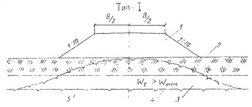
Рис. 1.
Поперечный профиль насыпи на торфяниках, подстилаемых льдистыми минеральными
грунтами:
1 -
песок крупно- или среднезернистый или супесь легкая; 2 - торфяник мощностью до
0,5 м; 3 - мелкозернистый песок или супесь пылеватая с естественной влажностью
более влажности предела текучести (We > Wтек); 4 - верхняя граница вечно-мерзлых грунтов
(ВГВМГ) до постройки насыпи; 5 - ВГВМГ после постройки насыпи.
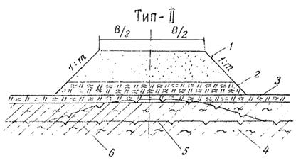
Рис. 2.
Поперечный профиль насыпи на льдистом минеральном грунте (пылеватый суглинок):
1 - крупно- или
среднезернистый песок; 2 - теплоизолирующий слой из торфа; 3 - мохоторфяной
слой; 4 - пылеватый суглинок льдистый; 5 - ВГВМГ до постройки насыпи; 6 - ВГВМГ
после постройки насыпи.
2.13. На косогорах с крутизной до 1:5, сложенных
вечномерзлыми минеральными грунтами и относящихся ко 2-му типу местности,
насыпи рекомендуется проектировать с бермой из теплоизолирующего материала
(мохоторф) с низовой стороны (рис. 3). Высота
бермы должна быть не менее половины высоты насыпи, рассчитываемой по второму
принципу проектирования. Крутизна откосов принимается равной 1:2.
2.14. В пониженных местах рельефа (обводненные поймы,
полосы стока), сложенных льдистыми и сильнольдистыми торфяниками мощностью 5 м
и более (глубина сезоннооттаивающего слоя 0,5 - 0,7 м), а также льдистыми
просадочными минеральными грунтами (3-й тип местности), насыпи следует
проектировать по первому принципу, предусматривая устройство в основании
теплоизолирующего слоя из естественного (мох, торф) или из искусственного
материала (пенопласт, струнит и др.), толщина которого в пределах проезжей
части принимается согласно п. 2.17.
Толщина слоя теплоизоляции под откосами удваивается.
Крутизну откосов принимают равной 1:2 (рис. 4).
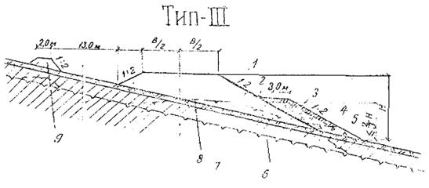
Рис. 3.
Поперечный профиль насыпи на косогорных участках местности, сложенных
вечномерзлыми минеральными грунтами:
1 -
песок крупно- или среднезернистый или легкий суглинок; 2 - мохорастительный
покров; 3 - берма из торфа; 4 - защитный слой из глины толщиной 0,2 м; 5 -
дренаж из крупнозернистого песка или гравия; 6 - грунт основания с Wе > 0,8 < Wтек;
7 - ВГВМГ до постройки насыпи; 8 - ВГВМГ после постройки насыпи; 9 - мерзлотный
валик из глинистого грунта.

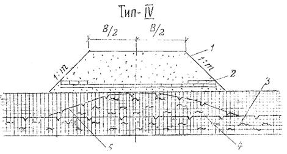
Рис. 4.
Поперечный профиль насыпи на сильнольдистых торфяниках:
1 -
крупнозернистый песок; 2 - теплоизоляционный слой из пенопласта; 3 -
сильнольдистый торфяник; 4 - ВГВМГ до постройки насыпи; 5 - ВГВМГ после
постройки насыпи.
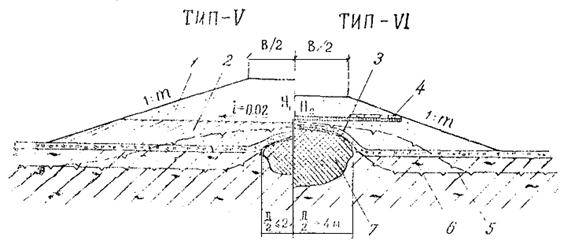
Рис. 5.
Поперечные профили насыпей на местности с мелкими буграми пучения:
1 - средне- или
крупнозернистый песок; 2 - суглинок или глина тяжелая; 3 - мохорастительный
покров; 4 - суглинок льдистый; 5 - ВГВМГ до постройки насыпи; 6 - ВГВМГ
после постройки насыпи; 7 - бугор пучения.
2.15. На участках торфяно-моховой и торфяно-бугристой
тундры с мелкими буграми пучения высотой 1,5 - 2,0 м и диаметром 4 - 6 м,
относящихся к 3-му типу местности, насыпи следует проектировать по первому
принципу, предусматривая нижнюю часть на 0,2 м выше бугра пучения из
уплотненного глинистого грунта и верхнюю (над бугром) - из дренирующего грунта
(рис. 5, тип - V).
Высоту насыпи назначают по первому принципу из условия сохранения бугра
постоянно в мерзлом состоянии. Крутизну откосов принимают не менее 1:3.
2.16. В целях уменьшения высоты насыпи, возводимой на
бугре пучения, и сохранения ее стабильности в особо сложных
инженерно-геологических условиях (обводненные льдистые торфяники, пылеватые
льдистые суглинки в полосе стока и т.д.) следует предусматривать
теплоизолирующий слой толщиной 30 см из естественных (мох, торф) или
искусственных (пенопласт, струнит и др.) материалов, которые укладывают по всей
ширине земляного полотна на уровне вершины бугра пучения (см. рис. 5, тип - VI) по распределительному слою толщиной не менее 30 см
из сухого средне- или крупнозернистого песка, в пределах откосов толщину слоя
теплоизоляции удваивают. Откосы насыпи принимают не менее 1:3.
2.17. Толщину теплоизолирующих слоев из пенопластов
различных марок определяют в зависимости от высоты насыпи и вида грунта
земляного полотна по табл. 6.
Таблица 6
|
Высота
насыпи, м
|
Толщина теплоизоляционных
слоев в основании насыпи из различных марок пеностиролов (пенопластов), см
|
|
ПС-1
|
ПС-4
|
ПС-5
|
ПС-18
|
ПС-254
|
ПСБСГ
|
|
2,5
|
4,5
|
4,5
|
5
|
3
|
6
|
7,0
|
|
2,0
|
6,0
|
6,0
|
7
|
4
|
8
|
9,5
|
|
1,5
|
8,0
|
8,0
|
9
|
6
|
10
|
12,0
|
|
1,0
|
10,0
|
10,0
|
12
|
8
|
12
|
14,5
|
Примечание. Данные
таблицы приведены для насыпей из средне- и мелкозернистых песков или суглинков с объемным весом от 1,6 до 1,8 т/м3.
2.18. На водораздельных участках и сухих террасах,
сложенных песками и супесями при глубине сезоннооттаивающего слоя до 2,5 м и со
сливающейся высокотемпературной мерзлотой (2-й тип местности), земляное полотно
проектируют по второму принципу, предусматривая возведение насыпей из
притрассовых резервов с сохранением мохорастительного покрова в основании
земляного полотна (рис. 6). Крутизну
откосов принимают равной 1:1,5.
2.19. На заторфованных поймах, до дна заполненных торфом
устойчивой консистенции и подстилаемых вечномерзлыми грунтами, насыпь следует
проектировать по второму принципу с усилением
ее основания сланевым настилом (рис. 7). При этом величину осадки рассчитывают по методике,
приведенной в прил. 3. Крутизна
откосов должна быть не менее 1:2.
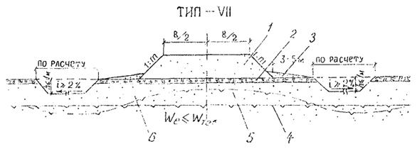
Рис. 6.
Поперечный профиль насыпи на сухих водораздельных участках со слипающейся
печной мерзлотой:
1 -
средне- или крупнозернистый песок; 2 - мохорастительный покров; 3 - берма; 4 -
ВГВМГ до постройки насыпи; 5 - ВГВМГ после постройки насыпи; 6 - мелко- или
среднезернистый песок; супесь.
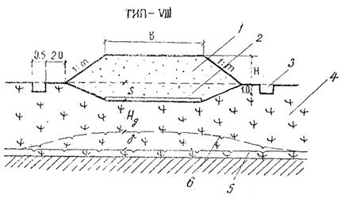
Рис. 7.
Поперечный профиль насыпи на заторфованных болотах:
1 - песок; 2 - сланевый
настил из бревен Æ 15 см; 3 -
осадочные прорези; 4 - торф устойчивой консистенции; 5 - ВГВМГ до постройки
насыпи; 6 - ВГВМГ после постройки насыпи.
2.20. Земляное полотно на участках затопляемых пойм
следует проектировать в соответствии с поперечными профилями, рекомендуемыми
пп. 3.24 и 3.25 BCН 84-75.
2.21. При определении объемов земляных работ следует
учитывать осадку земляного полотна за счет оттаивания и уплотнения грунтов
основания, величину которой рассчитывают согласно прил. 3.
2.22. Откосы насыпей в необходимых случаях следует
укреплять слоем из торфопесчаной или пескоцементной смеси толщиной
соответственно 20 и 10 см.
2.23. Земляное полотно на болотах, не подстилаемых
вечномерзлыми грунтами, проектируют на основе детальных инженерно-геологических
изысканий с необходимыми полевыми и лабораторными испытаниями торфов и
минеральных грунтов, руководствуясь «Методическими указаниями по
инженерно-геологическому обследованию болот при изысканиях автомобильных и
железных дорог» (М., СоюздорНИИ, 1973), «Методическими рекомендациями по
конструкциям и технологии сооружения земляного полотна при прохождении
обводненных болот, озер и грядово-озерковых болотных комплексов в условиях
севера Западной Сибири» (М., СоюздорНИИ, 1978) с учетом пп. 2.24 - 2.33
настоящей Инструкции.
2.24. По данным инженерно-геологических обследований
устанавливают типы торфяных грунтов и строительный тип болот.
Следует различать три типа торфяных грунтов по
прочности (табл. 7):
1 - грунты, которые обладают достаточной прочностью в
природном состоянии и при передаче на них расчетной нагрузки только сжимаются
независимо от скорости передачи нагрузки;
2 - грунты, не обладающие в природном состоянии
достаточной прочностью, при быстрой передаче на них расчетной нагрузки
выдавливаются, а при медленной - сжимаются;
3 - грунты, которые при передаче на них расчетной
нагрузки в любом случае выдавливаются.
В зависимости от типов торфяных грунтов, слагающих
слабую толщу, различают три строительных типа болот (табл. 8).
2.25. Земляное полотно на болотах проектируют в насыпях с
учетом категории дорог, типа дорожной одежды, глубины и типа болот в соответствии
с поперечными профилями, приведенными на рис. 8 - 10. Выбор
конструкции осуществляют на основе технико-экономического сравнения с учетом
частных факторов (темпа и стадийности строительства, наличия материалов,
пересечения коридоров коммуникаций, сопряжения земляного полотна с
искусственными сооружениями и др.).
2.26. Конструкцию земляного полотна с полным
выторфовыванием (рис. 8, тип - IX)
применяют на болотах I, II и III - А типов:
при глубине болот менее 2 м и протяженности их
по трассе менее 20 %:
при пересечении одиночных болот протяжением менее 400
м;
при сопряжении земляного полотна с искусственными сооружениями.
2.27. Конструкцию насыпи с посадкой на минеральное дно
(см. рис. 8, тип - X)
предусматривают на болотах III - Б типа и ограниченно на болотах III - А типа. При
этом болота не выторфовывают, а посадку осуществляют путем отдавливания слабых
слоев текучей консистенции весом насыпи. Для ускорения посадки необходимо
предусматривать соответствующие технологические меры (отсыпку грунта в узкие
продольные траншеи, пригрузку или поднасыпные взрывы).
2.28. Конструкцию земляного полотна с частичным выторфовыванием (см. рис. 8, тип - XI) предусматривают на болотах I и II
типов при безвыторфовочном методе строительства:
когда упругие деформации превышают допустимую
величину, а повышение рабочей отметки не представляется возможным (например,
участки сопряжений, примыкания и т.д.);
когда необходимо уменьшить величину конечной осадки.
Таблица 7
|
Разновидности
отложений
|
Тип торфа по
прочности
|
Подтип торфа по
деформативности
|
Сопротивление
сдвигу τсд, кгс/см2
|
Влажность, %
|
Плотность ρск,
г/см3
|
Коэф. пористости
θо
|
Сопротивление
зондированию q, кгс/см2
|
Модуль осадки lр, мм/м при давлении, кгс/см2
|
|
0,2
|
0,4
|
0,6
|
|
Торф маловлажный
|
1
|
A
|
³ 0,15
|
< 600
|
> 0,13
|
< 10
|
-
|
80
|
170
|
220
|
|
Торф средней влажности
|
1
|
Б
|
0,10 - 0,15
|
600 - 800
|
0,13 - 0,10
|
10 - 13
|
-
|
150
|
270
|
350
|
|
Торф очень влажный
|
2
|
-
|
0,03 - 0,10
|
800 - 1200
|
0,10 - 0,07
|
13 - 20
|
-
|
220
|
340
|
430
|
|
Торф избыточно влажный
|
3
|
A
|
< 0,05
|
> 1200
|
£ 0,07
|
> 20
|
³ 0,3
|
-
|
-
|
-
|
|
Жидкие образования
|
3
|
Б
|
-
|
-
|
-
|
-
|
< 0,3
|
-
|
-
|
-
|
Примечание. Типизация
торфов (зольностью до 8 % и степенью разложения до 45 %) выполнена
применительно к насыпи высотой до 2,5 м. Для насыпей большей высоты тип торфа
определяется соответствующим расчетом.
Таблица 8
|
Тип
и подтип болота
|
Характеристика деформаций
|
Характеристика
режима нагружения
|
Возможное наличие
типов (по прочности) грунтов, слагающих болото
|
|
I
|
Сжатие
|
Любая скорость
|
Только тип 1 (1-А, 1-Б)
|
|
II
|
Сжатие
|
Скорость отсыпки ограничена (не
более 0,65 кгс/см2 за месяц)
|
Тип 1 обязателен
Возможно наличие типа I
|
|
III-A
|
Выпор, частичное сжатие
|
Как правило, скорость отсыпки
ограничена (не более 0,05 кгс/см2 за месяц)
|
Возможно наличие всех типов.
Тип 3 и тип 1 обязателен
|
|
III-Б
|
Только выпор
|
Любая скорость
|
Только тип 3
|
Примечания.
1. Характеристика типов торфяных грунтов приведена в табл. 7.
2. Толщина выделяемых
слабых слоев должна составлять не менее 10 % от общей мощности болота.
2.29. Конструкцию земляного полотна с использованием
торфяной залежи в качестве несущего основания - плавающую насыпь (см.
рис. 8, тип - ХII) - применяют на болотах I, II и III-A
типов в случаях, не попадающих в условия пп. 2.26 - 2.28.
2.30. Конструкцию земляного полотна с использованием торфа
в основании и в нижней части насыпи предусматривают на болотах I и II типов при соответствующем
технико-экономическом обосновании (высокая заболоченность, большая дальность
транспортирования грунта). Конструкция земляного полотна (см. рис. 9) включает верхнюю (минеральную) и нижнюю (торфяную)
часть насыпи, возводимую на естественном торфяном основании.
Нижнюю часть насыпи устраивают из торфа боковых
резервов или из сосредоточенных карьеров,
используя слабо- и среднеразложившиеся торфы устойчивой консистенции, которые в
естественных условиях залегания отвечают следующим требованиям: степень
разложения не более 40 %; пористость менее 90 %; влажность не более 800 %;
сопротивление сдвигу по крыльчатке не менее 0,15 кгс/см2. Резервы
закладывают с обеих сторон земляного полотна не ближе 5 м от подошвы насыпи
(см. рис. 9,
тип - XIII). Ширина и глубина резервов определяется потребностью
в торфе для устройства нижней части насыпи.
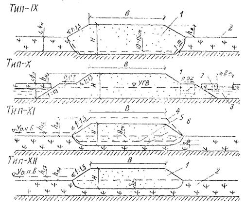
Рис. 8.
Поперечные профили насыпей на болотах I - III типов:
1 - насыпь из
минерального грунта; 2 - торфяная залежь; 3 - выдавливаемые торфяные
отложения или вода; 4 - профиль отсыпаемой насыпи; 5 - линия выторфовывания; 6
- линия посадки насыпи.
При невозможности закладки боковых резервов (болота II
типа, близкое расположение нефтегазопроводов, водоводов и т.д.), нижнюю часть
насыпи предусматривают из торфов притрассовых резервов (см. рис. 9, тип - XIV).
2.31. Земляное полотно на промороженных основаниях (рис. 10) предусматривают на болотах I - III
типов. Проектирование таких конструкций целесообразно, как правило, при глубине
болот более 1,5 м и протяженности участков более 1 км и не рекомендуется на
участках топей выклинивания и проточных топей с циркулирующими потоками
болотных вод.
2.32. Конструкцию земляного полотна на промороженном
основании на болотах I типа назначают применительно к поперечному профилю
типа - XV (см. рис. 10), а на болотах II и III
типов - применительно к поперечным профилям типа - XVI и XVII.
На болотах II типа конструкцию типа - XV (резервный
профиль) предусматривают в том случае, если болото сложено достаточно плотными
торфами (γ ³ 0,07 г/см3) или нижняя часть залежи
относится к болотам I типа.
Если в верхней части торфяной залежи болот I и II
типа имеются слои неустойчивой консистенции (мочажины, жидкие образования),
насыпи проектируют применительно к поперечному профилю XVIII,
предусматривая удаление слабых слоев зимой и замену их торфом устойчивой
консистенции.
2.33. Нижнюю часть насыпи (намораживаемую плиту)
устраивают из торфа боковых резервов (профиль типа - XV) или из торфа
сосредоточенных карьеров (профили типа XVI - XVIII),
закладываемых на болотах I типа.
Торфяную часть насыпи устраивают в серповидном
профиле, предусматривая толщину намораживаемой плиты по оси насыпи на 0,2 - 0,3
м больше, чем по бровкам. Крутизну откосов торфяной насыпи назначают равной
1:1.
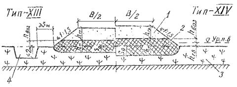
Рис. 9.
Поперечные профили насыпей на болотах I и II типов:
1 -
насыпь из минерального грунта; 2 - торфяная часть насыпи; 3 - торфяная залежь;
4 - боковой резерв.
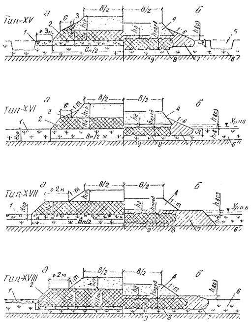
Рис. 10.
Поперечные профили насыпей на промороженных основаниях в период строительства
(а) и в процессе эксплуатации на конец теплого периода года (б):
1 -
промороженный слой естественной торфяной залежи; 2 - намороженная торфяная
плита; 3 - боковые призмы из торфа; 4 - насыпь из минерального грунта; 5 -
боковой резерв; 6 - талый слой торфяной залежи; 7 - талые слои торфяной плиты;
8 - граница мерзлого торфяного основания; 9 - минеральное дно болота.
2.34. Поверхностные и грунтовые поды рекомендуется
отводить от дорожного полотна с помощью боковых водоотводных и нагорных канав,
приоткосных берм, притрассовых резервов и нагорных мерзлотных валиков.
При выборе типов водоотводных устройств следует
руководствоваться данными по рельефу, мерзлотно-грунтовыми и
гидрогеологическими условиями местности в соответствии с требованиями ВСН
84-75.
2.35. Размеры водоотводных устройств назначают на
основании гидравлического расчета с учетом притока воды с площади водосбора.
2.36. На участках местности, где земляное полотно
проектируется по первому принципу, основными типами водоотводов должны быть
мерзлотные валики. Устройство канав запрещается.
Валики (см. рис. 3) располагают с нагорной
стороны не ближе 15 - 20 м от подошвы насыпи, высота их должна превышать
максимальный расчетный уровень воды на 0,25 м. Заложение откосов назначают не
круче 1:2, а ширину поверху - не менее 1,5 м.
Валики рекомендуется отсыпать из суглинка легкого или
тяжелого с сохранением мохорастительного покрова в основании и дополнительной
теплоизоляцией всей его поверхности.
2.37. На участках местности, где земляное полотно
проектируется по второму принципу, а также на сухих местах (1-й тип местности)
основными типами водоотводов должны быть боковые водоотводные и нагорные
канавы, притрассовые резервы.
Дно и откосы канав, проектируемых в легкоразмываемых
грунтах, следует укреплять одиночным или двойным слоем тундровой дернины или
бетонными плитами.
2.38. В равнинной местности, сложенной просадочными
грунтами, боковые канавы необходимо располагать не ближе 2 м от подошвы насыпи.
На косогорах, сложенных просадочными грунтами, канавы
следует удалять от подошвы насыпи на расстояние 15 - 20 м.
2.39. На косогорных участках, подверженных сильным снежным
заносам, водоотвод рекомендуется проектировать в виде двух рядов нагорных
канав, расположенных в 100 м друг от друга, или нагорной канавы в сочетании с
мерзлотным валиком. Первый ряд нагорных канав располагают не ближе 3 м от
подошвы земляного полотна. Уклоны дна канав принимают не менее 0,008, дна в
выемках - не менее 0,005.
2.40. При назначении конструкций дорожных одежд
руководствуются требованиями ВСН 84-75 и «Методическими рекомендациями по
проектированию и строительству сборных дорожных покрытий» (М., СоюздорНИИ,
1973) и положениями настоящей Инструкции.
2.41. На межпромысловых и внутрипромысловых дорогах III-п
и IV-п категорий следует применять дорожные одежды со
сборными покрытиями из железобетонных плит. На дорогах V категории
применяют переходные покрытия из гравийно-песчаных материалов.
При наличии соответствующих баз, технологического оборудования
и с учетом сроков ввода покрытий в эксплуатацию при соответствующем
технико-экономическом обосновании могут быть приняты варианты дорожных одежд с
монолитным цементобетонным или асфальтобетонным покрытиями.
2.42. Дорожная одежда со сборным покрытием включает
железобетонные плиты покрытия, выравнивающий слой и основание.
Для покрытия предусматривают железобетонные плиты
следующих типов:
предварительно напряженные плиты ПАГ-XIV,
ПДГ и ПДСН толщиной 14 см - на межпромысловых и внутрипромысловых дорогах
III-п и IV-п категорий;
ненапряженные плиты ПДС толщиной 16 см - на
внутрипромысловых дорогах IV-п и V категорий.
Техническая характеристика плит приведена в табл. 9, а
конструкции - в прил. 4.
2.43. Выравнивающий слои проектируют из цементопесчаной
смеси состава 1:8 - 1:10, толщину его назначают равной 3 - 5 см.
Если основание устраивают из песка, выравнивающий слой
не предусматривают.
2.44. Основания под сборные покрытия проектируют из
местных грунтов, укрепленных цементом, а также из щебня, гравийно-песчаной
смеси и песка. Укрепленные основания и основания из щебня и гравийно-песчаной
смеси предусматривают на дорогах III-п и IV-п категорий, а основания из песка - на дорогах V
категории. При этом минимальную их толщину назначают: из песка, укрепленного
цементом, - 14 см; из щебня и гравийно-песчаной смеси - 16 см; из песка - 20
см.
2.45. Толщину основания с принятой конструкцией плиты
уточняют расчетом дорожной одежды на прочность, руководствуясь основными
положениями «Практической методики расчета жестких дорожных покрытий с учетом повторности воздействия
нагрузок» (М., 1970).
Таблица 9
|
Тип
плит
|
Размер, м
|
Масса, т
|
Армирование в
зонах
|
Расход арматуры на
м2 плиты, кг
|
Материал
|
|
нижней
|
верхней
|
|
ПАГ-XIV
|
0,14×2×0
|
4,2
|
5 Æ 14
|
55 Æ 14
|
12,0
|
Цементобетон марки
300 - 400
|
|
ПДГ-1,5´6С
|
0,14×1,5×6
|
3,1
|
4 Æ 14
|
4 Æ 12
|
10,5
|
|
ПДСН
|
0,14×2×6
|
4,2
|
5 Æ 14
|
55 Æ 14
|
8,9
|
|
пдс
|
0,16×1,75×2
|
1,3
|
8 Æ 10
|
4 Æ 12
|
5,0
|
Цементобетон или
силикатобетон марки не менее 350
|
|
пдс
|
0,16×2×3
|
2,3
|
6 Æ 10 сетка Æ 5
|
4 Æ 10 сетка Æ 5
|
6,4
|
2.46. Толщину покрытий переходного типа из
гравийно-песчаной смеси назначают в соответствии с «Методическими
рекомендациями по конструированию, строительству и содержанию временных
автомобильные дорог в условиях строительства. БАМ» (М., СоюздорНИИ, 1975).
2.47. Материалы для устройства покрытия переходного типа и
основания по своему качеству должны удовлетворять требованиям СНиП 1-Д.2-70,
«Техническим указаниям по устройству оснований дорожных одежд из каменных
материалов, не укрепленных и укрепленных неорганическими вяжущими» (ВСН 184-75,
Минтрансстрой).
2.48. Для повышения морозостойкости песка, укрепленного цементом,
в его состав вводят добавку кремнийорганической жидкости ГКЖ-10 в количестве
0,2 - 0,4 % от массы цемента.
2.49. Конструкции дорожных одежд с асфальтобетонными
покрытиями (рис. 11) типы I (а,
в), II (а, б, в, д) применяют на дорогах III-п
категорий, а тип I (б, в), II (г, д) - на дорогах IV-п
категорий.
2.50. В случае возведения земляного полотна из суглинистых
грунтов толщины дорожных одежд с асфальтобетонными покрытиями назначают по
табл. 10. При устройстве верхней
части земляного полотна из супесчаных, песчаных и гравийно-песчаных грунтов толщину оснований дорожных одежд типов Iа, IIа
при интенсивности движения более 1200 авт./сут. уменьшают на 20 %.
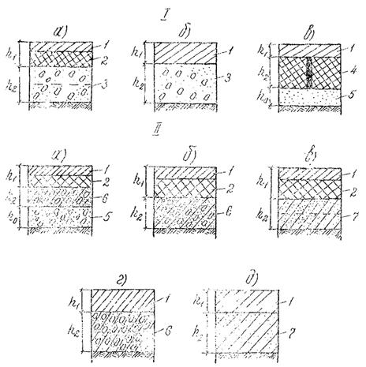
Рис. 11.
Типы конструкций дорожных одежд с асфальтобетонными покрытиями:
I тип - основания
из дискретных материалов (гравия, щебня, гравийно-песчаных и щебеночных
смесей); II тип - основания из
материалов, укрепленных неорганическими вяжущими; 1 - однослойное покрытие или
верхний слой двухслойного покрытия из мелко- или среднезернистого
асфальтобетона; 2 - нижний слой покрытия из крупно- или среднезернистого
асфальтобетона (пористого); 3 - основание из дискретных материалов; 4 - плита
из пористого асфальтового бетона; 5 - подстилающий слой основания из песка или
гравийно-песчаной смеси; 6 - основание из дискретных материалов, укрепленных
неорганическими вяжущими; 7 - основание из супесчаных грунтов или песчаных
материалов, укрепленных неорганическими вяжущими; h1
- толщина покрытия; h2 - толщина основания; h0 - толщина подстилающего слоя.
2.51. В верхних слоях оснований дорожных одежд применяют
цементогрунт I - II классов
прочности, а в нижних слоях - II - III. Класс прочности устанавливают по показателям
физико-механических свойств в соответствии с «Инструкцией по применению
грунтов, укрепленных вяжущими материалами, для устройства оснований и покрытий
автомобильных дорог и аэродромов» СН 25-74.
2.52. Асфальтобетон должен отвечать требованиям ГОСТ 9128-76
«Смеси асфальтобетонные дорожные, аэродромные и асфальтобетон. Технические
условия». Для устройства покрытий на дорогах III категории
применяют теплые асфальтобетоны I и II марок, а на дорогах IV категории -
теплые II и III марок.
2.53. Тип асфальтобетона по гранулометрическому составу
назначают из условий обеспечения трещино- и морозоустойчивости покрытий в
соответствии с табл. 11.
2.54. При проектировании асфальтобетонных смесей следует
руководствоваться значениями 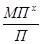
, приведенными в числителе табл. 11. Значение водонасыщения асфальтобетона при этом можно
допускать максимальное по объему: тип А - 4,5 %, тип Б - 3,5 %, тип В - 3,0 %.
Для более широких интервалов значений ,
принимаемых по ГОСТ
9128-76, необходимо корректировать допустимое водонасыщение. Пример проектирования
минеральной части асфальтобетонной смеси по рекомендуемым значениям приведен в
прил. 5.
2.55. На обочинах дорог III-п и IV-п
категории следует предусматривать укрепительные полосы из сборного железобетона
или песка, укрепленного цементом. Ширину укрепительных полос принимают равной
0,5 м с каждой стороны покрытия, а толщину равной толщине покрытия.
2.56. Водопропускные трубы следует проектировать на
водотоках периодического действия. На каждом пересечении водотока, как правило,
должно быть предусмотрено одно водопропускное сооружение.
Пропуск воды нескольких водотоков через одно сооружение
допускается в исключительных случаях при отсутствии вечномерзлых грунтов и
наледей и должен быть обоснован соответствующим расчетом.
2.57. Водопропускные трубы следует проектировать
капитального типа.
Для рассматриваемого региона рекомендуются металлические
гофрированные и круглые сборные железобетонные трубы с воротниковыми,
портальными и раструбными оголовками. При выборе типов оголовков необходимо
учитывать местные гидравлические и геологические условия.
2.65. Для устройства подушки следует прилепить щебеночные,
гравийные или гравийно-песчаные материалы, имеющие оптимальную влажность или
близкую к ней.
2.66. При заданных размерах труб и известных ширине и
длине грунтовых подушек фундаменты проектируют в следующем порядке:
рассчитывают минимальную глубину заложения фундамента
и определяют необходимую толщину слоя теплоизоляции;
оценивают величину возможной максимальной осадки по
значению относительного сжатия или непосредственно по физическим
характеристикам грунтов.
2.67. Минимальную глубину заложения фундамента определяют
согласно ВСН 84-75.
2.68. Необходимую толщину теплоизоляции в основании труб
устанавливают теплотехническим расчетом или ориентировочно принимают по табл. 12.
Таблица 12
|
Материал
теплоизоляции
|
Плотность, кг/м3
|
Коэффициент
теплопроводности, ккал/м.ч °С
|
Удельная
теплоемкость, ккал/кг °С
|
Толщина слоя
теплоизоляции, см
|
|
Уплотненный мохоторф
|
700
|
0,26
|
0,70
|
25
30
|
|
Полистирол ПС-1
|
100
|
0,035
|
0,29
|
5
7
|
|
Полистирол ПС-4
|
70
|
0,033
|
0,39
|
7
9
|
|
Пенопласт ПХВ-1
|
130
|
0,037
|
0,38
|
8
10
|
Примечание.
В числителе даны значения толщины слоя теплоизоляции для центральной части
трубы, а в знаменателе - для оголовочных частей. При этом среднее давление под
подошвой фундамента трубы (Р0, кгс/см2) определяют по
формуле:
P0 = 2p · gсн · r · δ · g · H (1)
где gс - объемным вес материала трубы,
кг/см3; r - средний радиус поперечного
сечения трубы, см; δ - толщина стенки трубы, см; g - объемный вес грунта засыпки, кг/см3;
Н - высота засыпки от верха трубы до верха покрытия, см.
2.69. Основания труб по деформациям рассчитывают из
условия:
S £ Sпр, (2)
где
S - величина расчетной осадки основания под серединой
трубы определяется согласно п. 4.25 СНиП II-18-76;
Sпр - предельная величина деформации основания,
соответствующая пределу эксплуатационной пригодности дорожного покрытия:
цементобетонного - 0,02 м, асфальтобетонного - 0,04 м, переходного и низшего -
0,10 - 0,15 м.
При наличии в основании песчаных и глинистых грунтов
плотного сложения расчет трубы на осадку не выполняют.
2.70. Проверку прочности основания из талых грунтов ведут
для средней части трубы. В качестве основного условия прочности принимают:
s £ Rн, (3)
где
s - расчетное давление по подошве фундамента в тс/м2
с учетом давления насыпи на звено, действия временной нагрузки и собственного
веса элементов трубы (звена и фундамента);
Rн - нормативное давление на грунт в тс/м2,
рассчитываемое на основе полевых или лабораторных определений прочностных и
деформационных характеристик грунтов (угол внутреннего трения Ф, удельное
сцепление С и модуль деформации (Eg).
В случае если условие прочности (3) не выполняется, необходимо предусмотреть уширение
подошвы фундамента, увеличение глубины его заложения или замену слабого грунта
в основании более прочным.
Уширение подошвы фундамента наиболее рационально при
небольшой высоте насыпи, когда на величину расчетного давления значительное
влияние оказывает временная нагрузка.
При замене грунта делают перерасчет для проверки
прочности подсыпки и подстилающего ее слабого основания.
2.71. Строительный подъем для труб на талом основании
назначают равным 1/80Н - при песчаных грунтах и 1/50Н - при глинистых грунтах
(Н - высота насыпи).
На слабых грунтах строительный подъем труб назначают в
зависимости от расчетной осадки, исходя из условия беспрепятственного пропуска
воды, исключения застоев или заливания отверстия.
При больших ожидаемых осадках и малых продольных
уклонах логов допускается превышение лотка в середине трубы над уровнем лотка у
входного оголовка в пределах 50 % от расчетной осадки.
2.72. Толщина засыпки над трубой должна быть не менее 1 м.
2.73. К зимним автомобильным дорогам (автозимникам)
относятся сезонные дороги с полотном и дорожной одеждой из снега, льда и
мерзлого грунта. Они подразделяются:
а) по продолжительности эксплуатации:
на усовершенствованные регулярные, возобновляемые
каждую зиму в течение ряда лет по одной и той же трассе;
временные, используемые в течение одного или двух
зимних сезонов;
разового пользования, служащие для разового пропуска
колонн автомобилей;
б) по расположению на местности:
на сухопутные, прокладываемые по суше;
ледовые, прокладываемые по льду рек, озер и морей.
Примечание:
Разновидностью ледовых автозимников являются переправы по льду через водотоки
на сухопутных автозимниках.
в) по продолжительности использования времени года:
на автозимники, предназначенные для эксплуатации
только в период с устойчивыми отрицательными температурами воздуха;
на автозимники с продленными сроками эксплуатации,
обеспечивающие проезд в течение зимнего и части (или всего) летнего периодов
года.
2.74. Усовершенствованные регулярные автозимники в
зависимости от размеров расчетной годовой грузонапряженности или расчетной
интенсивности движения подразделяются на две категории:
I - автозимники с перспективной (на 3 - 5 лет)
грузонапряженностью свыше 50 тыс. т нетто в год или с расчетной интенсивностью
движения, приведенной к автомобилю грузоподъемностью 5 т, свыше 150 авт./сут.;
II - автозимники с перспективной грузонапряженностью 50
тыс. т нетто в год и менее или с расчетной интенсивностью движения до 150
авт./сут.
2.75. Основные технические нормативы и
транспортно-эксплуатационные показатели автозимников надлежит назначать в
соответствии с «Инструкцией по проектированию, строительству и содержанию
зимних автомобильных дорог на снежном и ледяном покрове в условиях Сибири и
Северо-Востока СССР» (ВСН 137-77, Минтрансстрой).
Автозимники необходимо проектировать с учетом рельефа
местности, вида подстилающего основания, состояния грунтов и характера
метелевой деятельности в районе строительства.
2.76. Сухопутные автозимники на участках с прочными
грунтовыми основаниями проектируют в соответствии с поперечными профилями,
приведенными на рис. 16. Для
выравнивания оснований предусматривают устройство слоя из песка или гравийного
материала.
Конструкции типа I и II
назначают в незаносимой снегом местности в корытообразном поперечном профиле и
устраивают методом постепенного наращивания снегового полотна по мере выпадания
снега в течение зимы.
При объемах снегопереноса до 150 - 200 м3/м
предусматривают автозимники с поперечным профилем типа III и IV с
траншейным снегопаханием в придорожной полосе или с другими мерами снегозащиты.
2.77. При прокладке трассы по заболоченным поймам и
долинам рек конструкции дорог назначают в соответствии с поперечными профилями
типа V и VI, приведенными на рис. 17.
Поперечный профиль типа V назначают на
участках, где отсутствует в основании подземный лед. При этом целесообразно
предусматривать в проектах удаление мохорастительного покрова, заполнение
корыта дороги водой с последующим ее замораживанием для создания ровного и
прочного основания.
Во избежание развития термокарстовых и термоэрозионных
процессов, когда в основании близко от поверхности залегает подземный лед,
мохорастительный покров и кочки не удаляют, а тщательно рыхлят и перемешивают с
грунтом на полосе проезжей части, планируют и уплотняют (тип VI).
2.78. На марях, бугристых вечномерзлых торфяниках и других
подобных участках дороги проектируют с поперечным профилем типа VII
(см. рис. 18). Для
обеспечения ровного основания предусматривают срезку кочек и устройство
выравнивающего слоя толщиной 15 - 20 см из песка или гравия с поливкой его
водой.
2.79. При прокладке трассы по промерзающим болотам
конструкции дорог назначают в соответствии с поперечными профилями типа VIII
(см. рис. 19) в
залесенной или снегонезаносимой местности и типа IX - в
снегозаносимой открытой местности при объемах снегопереноса не более 200 м3/м.
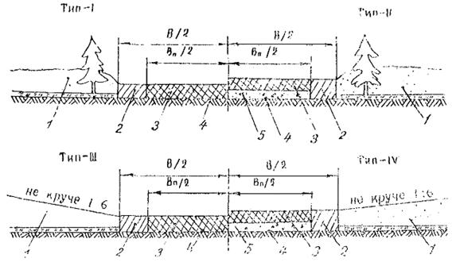
Рис. 16.
Поперечные профили автозимников на прочных грунтовых основаниях:
1 - снеговой покров; 2 -
уплотненный снег на обочинах; 3 - уплотненный или оледенелый снег на проезжей
части; 4 - спланированное основание; 5 - выравнивающий слой из песка или
гравия.
2.80. На снегозаносимых участках местности (объемы
переносимого снега превышают 200 м3/м), а также при пересечении
оврагов на участках с резким переломом продольного профиля следует устраивать
снежные насыпи в обтекаемом профиле (рис. 20, тип X), Плотность снега в теле насыпи должна быть не менее
0,5 г/см3 в нижних слоях и 0,55 г/см3 - в верхних.
Для повышения прочности насыпи устраивают
снежно-ледяную одежду или при пересечении оврагов настил из тонкомерной
древесины, веток, сучьев и т.п.
2.81. Высоту снежной насыпи Н, обеспечивающую
незаносимость дороги снегом, определяют по формуле:
Н = hсн + Dh, (4)
где
hcн -
средняя из наибольших в течение всей зимы высот снегового покрова в декады, м;
Dh -
возвышение насыпи над снеговым покровом, равное 0,2 - 0,3 м.
Заложение откоса насыпи принимают не круче 1:3.
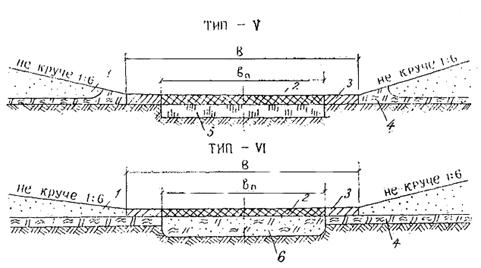
Рис. 17.
Поперечные профили автозимников, прокладываемых по заболоченным поймам и
долинам рек:
1 -
снеговой покров; 2 - уплотненный или оледенелый снег на проезжей части; 3 -
уплотненный снег на обочинах; 4 - естественный мохорастительный покров; 5 -
лед; 6 - перемешанный с мохорастительным покровом грунт, спланированный и
уплотненный гладилками.
Рис. 18.
Поперечный профиль автозимника на марях и бугристых вечномерзлых торфяниках:
1 -
снеговой покров; 2 - уплотненный снег на обочинах; 3 - уплотненный или
оледенелый снег на проезжей части; 4 - выравнивающий слой из гравия или песка;
5 - спланированное грунтовое основание.
Рис. 19.
Поперечные профили автозимников на промерзающих болотах:
1 -
снеговой покров; 2 - уплотненный снег на обочинах; 3 - уплотненный или
оледенелый снег на проезжей части; 4 - промерзший слой болота; 5 - непромерзший
слой болота; 6 - минеральное дно болота.
Рис. 20.
Поперечный профиль автозимника в насыпи из снега:
1 - снеговой покров; 2 -
насыпь из уплотненного снега; 3 - оледенелый слой снега на проезжей части.
2.82. Конструкции сухопутных автозимников на прочных
грунтовых основаниях рассчитывают на максимальные нагрузки от автомобилей в
период эксплуатации дороги согласно прил. 5 ВСН 137-77.
Конструкции автозимников на болотах и марях
рассчитывают для всех групп автомобилей по грузоподъемности. На стадии
проектирования составляют, используя методику в прил. 6 настоящей Инструкции,
таблицы грузоподъемности мерзлого торфа различной толщины при заданных
нагрузках с учетом температурного режима в районе строительства. Табличные
данные используют при разработке мероприятий по регулированию движения по мере
промерзания болот или по ускорению промораживания болот до глубин, обеспечивающих
требуемую несущую способность автозимника.
2.83. Ледовые зимние дороги проектируют в соответствии с
поперечным профилем, приведенным на рис. 21.
При интенсивности движения, свыше 150 авт./сут. на автозимниках,
прокладываемых по ледяному покрову крупных рек, озер и морей, полосы движении
следует разделять, предусматривая между ними не расчищаемую от снега полосу,
ширину которой устанавливают в соответствии с таб. 1, прил. 6.
2.84. На водных переправах для более раннего начала
эксплуатации сухопутного автозимника предусматривают, как правило, усиление
ледяного покрова:
послойным намораживанием льда;
устройством деревянных настилов.
Способ усиления ледяной переправы выбирают в каждом
конкретном случае в зависимости от климатических условий периода строительства,
толщины и состояния ледяного покрова, режима реки, наличия материалов и механизмов,
интенсивности и вида обращающихся нагрузок в соответствии с поперечными
профилями, приведенными на рис. 22 - 24.
2.85. Усиления переправ послойным намораживанием льда (типа
(XII - XIII, рис. 22)
рекомендуется применять при незначительной (до 200 авт./сут.) интенсивности
движения автомобилей средней грузоподъемности на реках с медленным течением
воды, при достаточно большой толщине естественного ледяного покрова и при
устойчивых отрицательных температурах воздуха (ниже -10 °С).
Для ускорения намораживания и повышения прочности
переправы следует предусматривать вмораживание хвороста, сучьев, веток, поперечного настила из жердей, отходов
лесопиления и т.п.
Примечание:
Намораживание возможно слоем не более 40 % толщины естественного льда во
избежание подтаивания ледяного покрова снизу.
Рис. 21.
Поперечный профиль автозимника на ледовом покрове рек и озер (морей):
1 -
снеговой покров; 2 - уплотненный слой снега толщиной 3 - 5 см на полотне; 3 -
ледяной покров; 4 - вода.
Рис. 22.
Усиление ледяного покрова методом послойного намораживания льда:
1 -
притрамбованный снег; 2 - жерди; 3 - намораживаемые слои; 4 - валик из снега; 5
- естественный ледяной покров; 6 - вода.
Рис. 23.
Усиление ледяных переправ деревянным настилом:
1 -
снеговой покров; 2 - колесопроводы; 3 - поперечины; 4 - стойки; 5 -
естественный ледяной покров; 6 - вода.
Рис. 24.
Конструкция «плавающей» дереволедяной переправы:
1 -
валик из снега; 2 - намороженный слой льда; 3 - грунтовая засыпка; 4 -
продольные лежни d ³ 20 см; 5 - сплошной сланевый настил из тонкомерной
древесины d ³
12 см; 6 - колесоотбои d ³ 22 см; 7 - проволочная скрутка d = 8 мм; 8 - естественный ледяной покров; 9 - вода.
Рис. 25.
Конструкции сопряжения берега и ледяного покрова на переправах:
а - простейший съезд с
берега на лед; б - свайный съезд с берега на лед; 1 - настил; 2 - лед с
вмороженным хворостом.
2.86. При тяжелом интенсивном движении ледяную переправу
усиливают деревянным настилом:
а) на поперечинах, укладываемых на лед через 0,8 - 1,0
м друг от друга (рис. 23, тип - XIV);
б) на поперечинах, опирающихся на вмороженные в лед
стойки (рис. 23,
тип - XV). Этот способ нельзя применять при глубине реки более
4 м и при резких и значительных колебаниях уровня воды;
в) в виде «плавающей» дереволедяной переправы (рис. 24, тип
- XVI) при глубине реки более 4 м и резком колебании уровня
воды.
2.87. Ледяные переправы усиливают деревянным настилом, как
правило, дли однопутного движения. При интенсивности движения свыше 200
авт./сут. и незначительном протяжении переправы следует предусматривать две
полосы движения. Если переправы усиливают настилом по типу - XIV,
полосы движения проектируют раздельно, на расстоянии не ближе 50 м друг от
друга. При устройстве настила по типу XV и XVI полосы
движения обычно не разделяют.
2.88. Сопряжение берега и ледяной переправы проектируют в
соответствии с рис. 25.
Простейший съезд с берега на лед (рис. 25, а) устраивают при наличии прочного льда, который
лежит на воде и хорошо опирается на берег. В остальных случаях предусматривают
свайные съезды (рис. 25, б).
Рис. 26.
Поперечные профили автозимников с продленными сроками эксплуатации:
1 - снеговой покров; 2 -
уплотненный слой снега на полотне дороги; 3 - естественный мохорастительный
покров; 4 - теплоизолирующее полотно из смеси снега со мхом; 5 - мерзлое
грунтовое основание; 6 - земляное полотно; 7 - полотно из уплотненного снега; 8
- хворостяная выстилка или сплошной настил из тонкомерной древесины; 9 -
сильнольдистый грунт основания.
2.89. Автозимники с продленными сроками эксплуатации при
интенсивности движения до 100 авт./сут. проектируют с устройством
теплоизолирующего слоя из смеси снега со мхом и растительным покровом (рис. 26, тип - XVII), плотность этого слоя должна быть не менее 0,65 г/см3
в верхних и не менее 0,55 г/см3 в нижних слоях.
Для пропуска тяжелого и интенсивного движения следует
предусматривать конструкции автозимников типа - XVIII - XIX с
отсыпкой земляного полотна из минеральных грунтов. При этом конструкции типа - XVIII
(см. рис. 26)
целесообразны в районах со значительной метелевой деятельностью.
Земляное полотно отсыпают шириной не менее 10 м и
высотой не менее 0,5 м с откосами 1:1,5 (тип - XVIII) или 1:3
(типы XIX и XX) из крупнозернистых песков или гравийно-песчаных
материалов (см. рис. 26).
Плотность снега в теплоизолирующем полотне (тип - XVIII)
должна быть не менее 0,6 г/см3.
В основании дорог следует
полностью сохранять мохорастительный покров, а на участках с сильнольдистыми грунтами
и подземными льдами дополнительно
предусматривать хворостяную выстилку толщиной 15 - 20 см или сплошной настил из неделовой древесины
(тип - XX).
2.90. Для обеспечения проезда в течение 1,5 - 2 месяцев
теплого периода года на заболоченных участках местности назначают конструкцию
дороги типа - XXI, а для обеспечения проезда в течение всего теплого
периода года - конструкцию типа - XXII (рис. 27).
2.91. Конструкция тина - XXI состоит из
мерзлого торфяного основания и дорожного покрытия, которое выполняет роль
теплоизолятора и воспринимает нагрузки от проходящего транспорта. Плотность
снегольда или смеси снегольда с добавками в дорожном покрытии должна быть не
менее 0,7 г/см3 в верхних и не менее 0,6 г/см3 в нижних
слоях покрытия.
Минимальную толщину дорожного покрытия рекомендуется
назначать 0,3; 0,5; 0,8; 1,0 м, в зависимости от требуемой продолжительности
эксплуатации автозимника в теплый период года соответственно 20, 40, 60, 80
суток.
2.92. Конструкция типа - XXII (см. рис. 27) состоит из мерзлого торфяного основания,
теплоизолирующего полотна из смеси снега с моховым очесом и земляного полотна.
Земляное полотно устраивают шириной 6 - 9 м, высотой 0,7 - 0,8 м с откосами
1:1,5, используя все виды местных грунтов или торфопесчаные смеси оптимального
состава (например, 1 м3 песка влажностью 8 % + 1,4 м3
торфа влажностью до 900 %).
Для обеспечения проезда в течение всего теплого
периода года толщина теплоизоляционного полотна при высоте земляного полотна
0,7 м должна быть не менее 1,2 м, а плотность смеси в полотне - не менее 0,6
г/см3.
Водоотводные канавы проектируют глубиной около 1 м,
шириной понизу 0,5 - 1,0 м и устраивают на расстоянии 2 - 3 м от края полосы
промораживания.
2.93. Мерзлое торфяное основание в конструкциях типа - XXI и
XXII обеспечивает общую несущую способность дорог, поэтому
толщина hmp и
ширина Вmp промороженного слоя болота, в зависимости от принятой
расчетной нагрузки, должна быть не менее величин, указанных в табл. 13.
Рис. 27.
Поперечные профили автозимников с продленными сроками эксплуатации на болотах:
1 - дорожное
покрытие из снегольда или смеси снегольда с добавками (моховой очес, древесные
опилки, щепа, стружка); 2 - промороженное торфяное основание; 3 - земляное
полотно; 4 - теплоизолирующее полотно из смеси снега с моховым очесом; 5 -
боковые водоводные канавы; 6 - талый слой болота.
Таблица 13
|
Группа
по грузоподъемности
|
Тип наиболее
тяжелой машины
|
Вес с полной
нагрузкой, т
|
Требуемая толщина
мерзлого основания hmp, м
|
Требуемая ширина
мерзлого основания Вmp, м
|
|
Колесные машины
|
|
Средние (от 3 до 4,5 т)
|
ЗИЛ-130
|
10,50
|
0,30
|
23
|
|
Тяжелые (от 5 до 7 т)
|
МАЗ-500
|
14,22
|
0,35
|
23
|
|
Тяжелые (свыше 7 т)
|
КрАЗ-257
|
23,40
|
0,49
|
25
|
|
Очень тяжелые (более 7 т на
колесо)
|
МАЗ-530
|
78,10
|
0,95
|
25
|
|
Гусеничные
машины
|
|
Тракторы типа ДТ
|
ДТ-70
|
7,5
|
0,29
|
23
|
|
Тракторы типа С и Т
|
Т-140
|
15,1
|
0,38
|
23
|
|
Тракторы типа ДЭТ
|
ДЭТ-250
|
25,0
|
0,48
|
25
|
|
Специальные
нагрузки
|
|
Колесная нагрузка НК-80
|
|
80
|
0,66
|
35
|
|
Гусеничная нагрузка НГ-60
|
|
60
|
0,82
|
35
|
|
Буровая вышка в
эксплуатационном состоянии
|
|
120
|
1,00
|
35
|
|
Буровая вышка в транспортном
положении
|
|
100
|
0,65
|
35
|
3.
СТРОИТЕЛЬСТВО
3.1. Строительство автомобильных дорог осуществляют в
соответствии с проектом производства работ, в котором должны быть отражены
сроки и технология выполнения рабочих процессов с учетом принятых принципов
проектирования, конструкций дорог, местных климатических и мерзлотно-грунтовых
условий.
3.2. На участках, где земляное полотно запроектировано по
первому принципу, сроки проведения подготовительных и основных работ должны
быть строго соблюдены. Запрещается перенесение отдельных видов работ на
последующие сроки, не предусмотренные проектом.
3.3. Для производства земляных работ на вечномерзлых
грунтах в заданные сроки должны быть укомплектованы три отряда машин: по
выполнению подготовительных работ; по возведению земляного полотна,
запроектированного по первому принципу (преимущественно в зимнее время); по
возведению земляного полотна, запроектированного по второму принципу (в летнее
время и частично зимой).
3.4. При комплектовании отрядов учитывают реальную
продолжительность строительного сезона, которая зависит от климатических
условий и вида применяемого грунта.
Насыпи из крупнообломочных или песчаных грунтов
возводят круглогодично. Расчетное количество рабочих смен Тр
определяют по формуле:
Тр
= (Тг - Тп - Тм + Тс) ·
Кс, (5)
где
Тг - календарная продолжительность года, сут.;
Тп - количество выходных и праздничных дней
в году;
Тм - количество нерабочих дней по
метеоусловиям (с температурой воздуха ниже -35 °С);
Тс - количество нерабочих дней по
метеоусловиям, совпадающих по времени с праздничными и выходными днями;
Кс - коэффициент сменности работы машин.
3.5. Продолжительность сезона по возведению земляного
полотна из глинистых грунтов боковых резервов определяют с учетом длительности
безморозного периода, скорости оттаивания грунтов, количества дней с осадками,
приводящими к переувлажнению грунтов и времени их просыхания. Количество
рабочих смен рассчитывают по формуле:
Тр = Тб - Тот - Тп
- ng + Тс - (Tг - Tc) · Tпp · Кc, (6)
где
Тб - длительность безморозного периода (между датами устойчивого
перехода средней суточной температуры воздуха через 0 °С), сут.;
Тот - время, необходимое для оттаивания
грунтов на 10 - 15 см, когда можно начинать их разработку, сут.;
Тп - количество праздничных и выходных дней за безморозный
период;
ng - количество дней с осадками, приводящими к переувлажнению грунтов в
слое 10 - 15 см (для супесей и суглинков легких - 5 мм/сут.; суглинков тяжелых
и глин 8 мм/сут. и более);
Тс - количество дней с указанными осадками,
совпадающих по времени с праздничными и выходными днями;
Тпр - время, необходимое для просушивания
грунта после дождя, сут.
Необходимые расчетные данные устанавливают по ВСН
84-75.
3.6. При сооружении земляного полотна на болотах в зимнее
время необходимо предусматривать технологические перерывы по времени между
отдельными видами работ. Поэтому целесообразно механизированному отряду
планировать выполнение работ на ряде болот с различными конструкциями земляного
полотна, например, с полным выторфовыванием, на промороженных основаниях,
плавающих насыпях. Участки работ, обслуживаемые механизированным отрядом, должны быть расположены так, чтобы свести
до минимума потери времени на переброску строительной техники и периоды
технологических перерывов.
3.7. При прохождении трассы дороги вблизи рек заготовку
грунта для устройства земляного полотна можно вести способом гидромеханизации.
3.8. При постройке водопропускных труб должна быть
обеспечена непрерывность всего комплекса работ от разработки котлована до
засыпки трубы грунтом в соответствии с графиком.
3.9. При отсыпке земляного полотна и устройстве дорожной
одежды в течение одного календарного года разрыв по времени между окончанием
земляных работ и началом устройства дорожной одежды устанавливает проектная
организация.
3.10. Дорожную одежду со сборным покрытием устраивают, как
правило, поточным методом. В тех случаях, когда устройство дорожной одежды
одним потоком организовать невозможно, работы следует разделять на два потока.
Первый включает устройство основания, выравнивающего слоя, монтаж и посадку
плит, второй - сварку стыковых соединений, омоноличивание стыков, заделку швов
и укрепление обочин.
3.11. Для обеспечения поточного строительства
асфальтобетонных покрытий в комплексе асфальтобетонного завода следует
предусматривать не менее двух смесительных установок, позволяющих одновременно
выпускать смеси для нижнего и верхнего слоев покрытия. В летний период работа
на асфальтобетонных заводах организуется в две смены, а в районах с полярным
днем - круглосуточно.
3.12. Для полного использования короткого летнего периода
необходимо комплексно механизировать возведение земляного полотна, дорожных
одежд, искусственных сооружений, обеспечить двух - трехсменную работу машин.
3.13. Машины для выполнения работ выбирают с учетом
природно-климатических и мерзлотно-грунтовых условий, влияющих на их
эксплуатационные показатели.
На земляных работах, кроме машин обычного исполнения,
применяют машины в северном исполнении, с рабочими органами и ходовой частью
повышенной прочности, а также повышенной проходимости (табл. 14).
Таблица 14
|
Модификация
машин
|
Рекомендуемые
марки машин
|
|
Экскаваторы с
ковшом емкостью, м3
|
Бульдозеры на
тракторе мощностью, кВт
|
Бульдозеры-рыхлители
на тракторе мощностью, кВт
|
Автогрейдеры
мощностью, кВт
|
Катки
|
|
В северном исполнении (при t до -60 °С)
|
Э-652БХЛ, 065
ЭО-5111ЕХЛ, 1,0
ЭО-6112БХЛ, 1,25
Э-2505СА-1, 2,5
Э-2505, 2,5
|
ДЗ-35С-Т-180Г, 132
ДЗ-34С-ДЭТ-250М, 184
ДЗ-59-Т-330, 243
ДЗ-27С-Т-130.I.Г-1,
118
ДЗ-110ХЛ-Т-130.I.Г-1, 118
ДЗ-54С-Т-100МЗГП, 79
|
ДП22С-T-180KC2, 132
ДЗ-94С-Т-330, 243
ДЗ-95-Т-330, 243
ДЗ-116ХЛ-Т-130.I.Г-1, 118
ДЗ-117ХЛ-Т-180КС, 132
|
ДЗ-31-1ХЛ, 96
|
Навесное оборудование на
тракторе Т-130АС
|
|
С повышенной хладостойкостью
основных узлов (при t до -40 °С)
|
Э-652Б, 0,65
ЭО-4121, 1,0
Э-1011Е, 1,0
ЭО-5122, 1,6
Э-2503, 25
ЭО-6122, 1,6
|
ДЗ-54С-Т-100МЗГП, 79
ДЗ-118-ДЭТ-250М, 184
|
ДЗ-116А-Т-130.I.Г-1,
118
ДЗ-117-Т-130.I.Г-1,
118
|
ДЗ-98, 184
ДЗ-98-0-1, 184
|
ДУ-37Б массой 15,5 т
полуприцепной к трактору T-158
Каток массой 15 т полуприцепной
к трактору Т-150К
|
|
Повышенной проходимости
|
Э-304В, 0,4
Э-5015А, 0,5
ТЭ-ЗМ торфяной, 0,5
МТП-71 торфяной, 1,0
|
ДЗ-18-Т-100 МЗГП, 79
ДЗ-18А-Т-100 МЗГП, 79
|
-
|
-
|
-
|
3.14. В состав подготовительных работ по сооружению
земляного полотна входят:
расчистка дорожной полосы от леса, кустарника, снега;
удаление мохорастительного покрова с полосы резервов;
устройство нагорных и осушительных канав;
устройство подъездных дорог к карьерам;
заготовка мохорастительного покрова и торфа для
теплоизоляционных слоев;
устройство сланей.
3.15. Сроки выполнения подготовительных работ назначают в
зависимости от типа местности и принятого принципа проектирования земляного
полотна.
На участках, где земляное полотно запроектировано по
первому принципу, расчистку дорожной полосы, устройство подъездных дорог и
сланей следует выполнять в зимнее время. Лес и кустарник удаляют только на
ширину основания насыпи. Корчевка пней запрещается.
3.16. На участках, где земляное полотно запроектировано по
второму принципу, подготовительные работы выполняют с соблюдением следующих
правил:
лес и кустарник удаляют в зимнее время;
мохорастительный покров с поверхности резервов удаляют
сразу после его оттаивания, используя схему, рекомендованную п. 4.12 ВСН 84-75;
нагорные канавы устраивают одновременно с расчисткой
резервов по мере оттаивания грунта. Перенесение этой работы на более поздние
сроки не допускается.
3.17. В качестве подъездных дорог к карьерам зимой следует
использовать обычные автозимники, а к началу летнего периода должны быть
подготовлены автозимники с продленными сроками эксплуатации или временные
дороги с шириной насыпи 8 м и высотой не менее 0,6 м.
3.18. Мохорастительный покров или торф для
теплоизоляционных слоев необходимо заготавливать зимой или ранней весной путем
послойной разработки бульдозерами с перемещением в валы и призмы для
просушивании. Участки территории, где намечена заготовка теплоизоляционного
материала, должны быть удалены от трассы дороги на расстояние не менее 100 м.
Призмы теплоизоляционного материала должны быть уложены большей стороной по
направлению преобладающих ветров.
3.19. Машины для подготовительных работ выбирают с учетом
видов выполненных работ, условий и сроков их производства (табл. 15).
Таблица 15
|
Виды
выполняемых работ
|
Условия и сроки
производства работ
|
Тип и модификация
машин
|
|
1
|
2
|
3
|
|
Расчистка дорожной полосы от
кустарника и мелколесья
|
На участках, запроектированных
по I принципу, зимой после промерзания грунта на
глубину более 0,25 м
|
Кусторезы,
корчеватели-собиратели, бульдозеры в северном исполнении
|
|
На участках, запроектированных
по II принципу, в весенне-летний период
|
Кусторезы,
корчеватели-собиратели, бульдозеры на тракторах повышенной проходимости
|
|
Валка деревьев
|
На участках, запроектированных
по I принципу, в зимний период.
|
Бензопилы, валочно-пакетирующая
машина типа ЛП-2
|
|
На участках, запроектированных
по II принципу, в весенне-летний период
|
Древовалы, бульдозеры с
упорными рамами
|
|
Корчевка пней
|
На участках, запроектированных
по II принципу, летом при глубоком протаивании
грунтов
|
Корчеватели-собиратели,
бульдозеры с рыхлителями на тракторах повышенной проходимости
|
|
Корчевка иней на площади
карьеров
|
В зимний период
|
Взрывной метод
|
|
Рыхление грунта в карьере
|
В зимний период, грунты -
мерзлые пески, супеси
|
Рыхлители,
бульдозерно-рыхлительные агрегаты в северном исполнении
|
|
Трелевка древесины
|
На участках, запроектированных
по I принципу, зимой.
|
Трелевочные и гусеничные
тракторы в северном исполнении
|
|
На участках, запроектированных
по II принципу, в осенний период при промерзании
грунта на глубину более 0,25 м
|
Трелевочные и гусеничные
тракторы
|
|
Расчистка площадей карьеров и
резервов от мохорастительного покрова
|
На участках, запроектированных по
II принципу:
|
|
|
в весенне-летний период по мере
оттаивания грунта;
|
Бульдозеры
|
|
в летний период при глубоком
протаивании
|
Бульдозеры повышенной
проходимости
|
|
Заготовка торфа для
теплоизоляционных слоев
|
Зимой
|
Рыхлители, бульдозеры,
экскаваторы в северном исполнении
|
|
весенне-летний период по мере
оттаивания грунта
|
Бульдозеры, экскаваторы
|
|
Устройство теплоизоляционного
слоя из торфа
|
На участках, запроектированных
по I принципу, зимой или в осенний период при
промерзании грунта на глубину более 0,25 м
|
Автомобили самосвалы,
бульдозеры, катки
|
3.20. На участках, где земляное полотно запроектировано по
первому принципу, отсыпку насыпей начинают в зимнее время после промерзания
грунта основания на глубину не менее 0,3 м. Нижние слои насыпи на высоту до 0,5
м отсыпают по способу «от себя», а последующие - продольным способом.
Насыпи отсыпают на полную высоту или в две стадии по
времени. При двухстадийном возведении насыпь на часть высоты отсыпают зимой на
промерзшее основание (первая стадия), а досыпают до проектной отметки летом
(вторая стадия).
Работы на второй стадии должны быть выполнены к сроку,
при котором грунт под насыпью сохранится в мерзлом состоянии. Эти сроки
устанавливают теплотехническим расчетом как время, необходимое на оттаивание
слоя насыпи, отсыпанного на первой стадии. Ориентировочно их можно определить
по графику (рис. 28). Отряды машин должны быть укомплектованы с
учетом объемов работ на второй стадии и ограниченности сроков их выполнения.
3.21. Насыпь из песчаного грунта с теплоизолирующим слоем
из сухого торфа (см. рис. 2) возводят
по схеме комплексной механизации № 1 (прил. 7) с соблюдением следующих правил:
а) удаляют снег с дорожной полосы бульдозером;
б) заготовленный заблаговременно и просушенный в
карьере торф загружают в транспортные средства, доставляют к месту укладки и
разравнивают послойно бульдозерами;
в) уплотняют торф катками на пневматических шинах
массой до 10 т при 6 - 7 проходах по каждому следу; толщину слоя назначают 0,4
- 0,5 м (в рыхлом состоянии);
г) отсыпают насыпь из минерального грунта; первый слой
- по способу «от себя», последующие - продольным способом с учетом рекомендаций
п. 3.20.
Рис. 28.
Сроки досыпки насыпи на второй стадии:
τ
- период досыпки насыпи; t - средняя за
период (τ) температура воздуха; hн
- высота насыпи на первой стадии.
3.22. Насыпь типа - III (см. рис. 3) возводят с соблюдением следующих правил:
первый слой отсыпают по способу «от себя» с
одновременным устройством дренажной присыпки и разравниванием грунта
бульдозером;
присыпку из мохоторфа наращивают послойно с одновременной
отсыпкой и разравниванием грунта в насыпи (рис. 29).
3.23. Земляное полотно с искусственным теплоизоляционным
слоем (см. рис. 4) возводят
по схеме комплексной механизации № 2 (см. прил. 7) в следующем порядке:
а) удаляют снег с дорожной полосы бульдозером;
б) отсыпают выравнивающий песчаный слой толщиной до
0,3 м (в зависимости от неровностей на поверхности) и планируют его
автогрейдером или бульдозером;
в) укладывают плиты теплоизолятора на проектную
ширину;
г) отсыпают первый слой насыпи толщиной 0,5 - 0,6 м из
песка по способу «от себя», надвигая грунт бульдозером вначале на крайние
плиты, а затем на средние, не допуская попадания на них крупных комьев мерзлого
грунта;
д) отсыпают остальные слои насыпи до проектной отметки
продольным способом.
Рис. 29. Технологическая последовательность возведения насыпи
на косогоре с теплоизоляционной присыпкой:
1 - возведение первого
слоя насыпи из песчаного грунта по способу «от себя» с одновременным
устройством дренажной присыпки; 2 - послойная отсыпка грунта насыпи и торфяной
присыпки; 3 - послойная отсыпка грунта насыпи и присыпки из суглинка; 4 -
досыпка насыпи до проектной отметки.
3.24. Насыпи на участках с мелкими буграми пучения (см.
рис. 5) возводят с соблюдением требования увязки работ по
времени и этапности. На первом этапе устраивают выравнивающий слой на высоту
бугра пучения, укладывают теплоизоляционный материал и засыпают его слоем
грунта 0,5 - 0,6 м. Досыпку насыпи до проектной отметки выполняют на втором
этапе при подходе линейного потока с соблюдением сроков по п. 3.20.
3.25. На участках с несколькими буграми пучения в пределах
дорожной полосы отсыпают сплошной выравнивающий слой и используют его в дальнейшем как транспортный проезд для
автомобилей и дорожных машин в зимнее время.
3.26. Конструкцию типа - V (см. рис. 5) возводят по схеме комплексной механизации № 3 (см.
прил. 7) с учетом следующих правил:
а) очищают дорожную полосу от снега;
б) глинистый грунт отсыпают в насыпь в осенне-зимний
период после промерзания основания на глубину 0,3 м;
в) разработку глинистого грунта в карьере, доставку в
насыпь, разравнивание и уплотнение ведут круглосуточно, соблюдая рекомендации
«Технических указаний по строительству автомобильных дорог в зимних условиях»
(ВСН 120-65, Минтрансстрой).
3.27. Земляное полотно типа - VI (см. рис. 5) возводят по схеме комплексной механизации № 4 (см.
прил. 7) в следующем порядке:
а) удаляют снег с дорожной полосы бульдозером;
б) отсыпают выравнивающий слой из песчаного грунта на
высоту бугра пучения с продольным уплотнением;
в) укладывают
плиты теплоизоляционного материала стыками вразбежку;
г) отсыпают грунтовый слой толщиной 0,5 - 0,6 м по
способу «от себя», соблюдая требования п. 3.23.
3.28. Земляное полотно, запроектированное по второму
принципу (см. рис. 6), возводят
из грунтов боковых резервов, соблюдая требования ВСН 84-75. Первый
слой насыпи и бермы отсыпают бульдозером путем последовательной надвижки грунта
от края бермы к оси насыпи.
3.29. Насыпь на заторфованных поймах, подстилаемых
вечномерзлыми грунтами (см. рис. 7),
сооружают с соблюдением следующих правил:
сланевый настил устраивают в зимнее время или ранней весной
до начала оттаивания основания;
насыпь допускается отсыпать летом, первый слой по
способу «от себя», а последующие - продольным способом.
3.30. Насыпь на болоте с полным и частичным
выторфовыванием (см. рис. 8, типы - IX и X)
возводят в две стадии в такой технологической последовательности:
подготавливают полосу отвода и основание;
разрабатывают траншею выторфовывания;
послойно отсыпают и уплотняют минеральный грунт в
насыпи.
3.31. Полосу отвода и основания следует подготавливать
после промерзания болота на глубину 0,1 - 0,15 м.
Для ускорения промерзания торфа по полосам движения
экскаватора с внешних сторон траншеи выторфовывания удаляют бульдозером снег,
кустарник, мелколесье и кочки на ширину 10 м и на длину траншеи выторфовывания
(рис. 30,
а). Снег на месте будущей траншеи сохраняют до начала работ по выторфовыванию,
чтобы не допустить глубокого промерзания болота.
Безопасная работа экскаватора обеспечивается при
толщине промерзшего слоя торфа не менее 0,4 м.
3.32. Основную траншею выторфовывания разрабатывают
экскаваторами в продольном направлении, предварительно очистив поверхность
траншеи от снега и мелколесья (см. рис. 30, б).
Экскаваторы целесообразно оборудовать ковшами,
имеющими отверстия в задней стенке для свободного стекания воды во время
загрузки обводненного торфа. Работу экскаватора организуют поточным методом,
как правило, в две смены или круглосуточно.
В конце каждой смены торфяные валы разравнивают
бульдозерами, не допуская смерзания торфа.
3.33. На болотах II типа глубиной до 2 м боковые
полосы следует промораживать на глубину не менее 0,8 - 1,0 м, чтобы избежать
оплывания откосов траншеи. При сильной обводненности торфов и мощности залежи
более 2 м целесообразно устраивать дополнительные боковые траншеи шириной 0,5 -
1,0 м на расстоянии 1,5 - 2,0 м от основной траншеи выторфовывания (см. рис. 30, в). В торфах, способных удерживать стенки,
дополнительные траншеи устраивают сразу до минерального дна или на глубину частичного
выторфовывания. Если торфы слабые, то дополнительные траншеи устраивают
послойной разработкой, углубляя на 0,5 - 0,6 м после промерзания стенок
открытой части.
Поступающую в траншеи воду необходимо откачивать,
добиваясь понижения ее уровня.
Рис. 30.
Проведение работ по выторфовыванию в зимний период:
а - расчистка и
промораживание боковых полос; б - выторфовывание болот I
типа; в - устройство вспомогательных траншей на болотах II
типа; 1 - талый торф; 2 - промерзший слой торфа; 3 - снег; 4 - основная траншея
выторфовывания.
3.34. После промерзания дна и стенок боковых траншей
расчищают поверхность траншеи выторфовывания от снега и мелколесья и удаляют торф из траншеи экскаваторами таким же
методом, как на болотах I типа (см. п. 3.32).
3.35. При промерзании дна траншеи выторфовывания на
глубину, обеспечивающую проезд автомобилей (0,1 - 0,15 м), завозят дренирующий
грунт автосамосвалами, послойно его разравнивают бульдозерами и уплотняют
катками на пневматических шинах или трамбующими машинами до требуемых норм.
3.36. Земляное полотно, послойно уплотняя, отсыпают до
проектных отметок или на неполную высоту в целях создания задела на летний
период. Во всех случаях верх земляного полотна, отсыпанного в зимний период,
должен возвышаться над поверхностью болота не менее чем на 0,5 м.
3.37. При сооружении земляного полотна из глинистых
грунтов в зимний период все технологические операции, начиная от разработки
грунта в карьере и кончая его уплотнением в теле насыпи, должны быть выполнены
за период, в течение которого температура грунта не будет ниже +0,5 °С. Исходя
из этого, назначают длину захватки земляных работ 150, 100, 50 м в зависимости
от температуры воздуха: до -10°; от -10° до -20°, ниже -20 °С.
3.38. Технология возведения плавающих насыпей (см. рис. 8, тип - XII) в зимний период включает: подготовку торфяного
основания, послойную отсыпку и уплотнение минерального грунта в насыпи.
Подготовка торфяного основания включает:
проминку поверхности болот;
очистку основания от снега, древесной и кустарниковой
растительности на ширину понизу;
систематическую очистку полосы от выпадающего снега в
течение периода промораживания торфяного основания.
3.39. Поверхность болот I типа
необходимо проминать осенью сразу после наступления холодов и выпадания снега.
Болота проминают круговыми проходами по рабочей
захватке гусеничных машин типа ГАЗ-47, ГТТ, Т-100 МБ и др. Первый проход делают
по оси дороги, а второй и третий - по краям промораживаемого торфяного
основания. Последующие проходы осуществляют от краев к оси дороги, смещаясь за
каждый проход на ширину гусеницы. Поверхность болот II типа не
проминают.
3.40. Дорожную полосу расчищают от снега, древесной
растительности бульдозерами на базе трактора Т-100 МБ. Сначала прокладывают пионерную
траншею по оси дороги, а затем расчищают поперечными проходами бульдозера в обе
стороны по оси дороги, перемещая снег и валежник за границы промораживаемого
торфяного основания.
Время начала проведения расчистки основания
определяется несущей способностью промерзшего слоя болота.
Полный вес гусеничного бульдозера, т 10 15
Минимальная толщина промерзшего
слоя на болотах I типа, м 0,20 0,24
Минимальная толщина промерзшего
слоя на болотах II типа, м 0,24 0,35
Усредненные данные потребности машин для проминки и
расчистки дорожной полосы от снега и древесной растительности приведены в табл.
16.
Таблица 16
|
Наименование
работ и машин
|
Потребность в
машинах на 1 км дороги (маш-смен) при ширине подготавливаемой полосы, м
|
|
20
|
25
|
30
|
|
Проминка гусеничным тягачом
типа ГТТ
|
0,5
|
0,65
|
0,75
|
|
Расчистка бульдозером на
тракторе Т-100 МБ
|
5,4
|
6,8
|
8,1
|
3.41. Толщина мерзлого слоя торфяной залежи должна быть не
менее 0,5 м для обеспечения безопасной работы и требуемых норм уплотнения
грунтов в насыпи.
Земляное полотно отсыпают обычными способами,
применяемыми при возведении насыпей из грунтов сосредоточенных резервов в зимних
условиях. Толщина слоя отсыпки зимой назначается из условия обеспечения осадки
и возвышения насыпи над болотом на 0,5 м. Досыпку полотна осуществляют летом,
после оттаивания промороженного торфяного основания.
3.42. Для ускорения хода осадки торфяного основания в
весенний период пропиливают мерзлый слой торфа с двух сторон насыпи установками
«Бара».
3.43. Технологическая последовательность рабочих процессов
при сооружении земляного полотна с использованием торфа в основании и в нижней
части насыпи (см. рис. 9, типы - XIII
и XIV) следующая:
подготовка полосы отвода и основания;
отсыпка нижней части насыпи из торфа;
отсыпка верхней части насыпи из минерального грунта.
Полосу отвода и основания следует подготавливать с
наступлением отрицательных температур воздуха, когда становится возможным
проезд по болоту. Состав работ зависит от способа заготовки торфа для нижней
части насыпи: из боковых резервов (на болотах I и II
типов) или из сосредоточенных резервов (на болотах II типа).
На болотах I и II типов, где
предусмотрено возводить нижнюю часть насыпи из торфа боковых резервов, по
полосам движения экскаватора с внешних сторон от подошвы насыпи удаляют
бульдозером снег, кустарник, мелколесье и кочки на ширину 4 - 5 м и на длину
фронта работы экскаватора (рис. 31, а).
После промерзания очищенных полос на глубину,
обеспечивающую безопасную работу экскаватора (0,35 - 0,40 м), бульдозерами
удаляют снег с основания насыпи и с полосы одного бокового резерва на длину
фронта работ. Полосу другого резерва оставляют под снегом (см. рис. 31, б).
Рис. 31. Проведение работ по устройству нижней части насыпи
из торфа на болотах I и II типов:
a
- расчистка и промораживание боковых полос; б - расчистка основания насыпи и
бокового резерва; в - разработка резерва и заготовка торфа для нижнего слоя
насыпи; г - расчистка второго бокового резерва; д - разработка бокового резерва
и заготовка торфа для верхнего слоя торфяной насыпи; 1 - валы снега и
кустарника; 2 - промораживание полосы; 3 - снег на дорожной полосе; 4 -
торфяная залежь; 5 - контур боковых резервов; 6 - валы торфа; 7 - нижний слой
торфяной насыпи.
3.44. Торф в резерве разрабатывают
экскаватором-драглайном, движущимся вдоль бровки траншеи. Разработку ведут за
один проход (см. рис. 31, в),
заготавливая и перемещая в вал такое количество торфа, которого хватит на
устройство одного слоя на всю ширину нижней части насыпи. Исходя из этого,
определяют ширину и глубину боковых резервов.
3.45. Заготовленный и уложенный в вал торф выдерживают в
течение 2 - 3 сут., что позволяет снизить его влажность. Затем приступают к
разравниванию вала, перемещая торф бульдозером в насыпь под углом к оси дороги.
Торф, уложенный в насыпь на всю ширину, уплотняют гусеницами трактора Т-100 MБ за
5 - 6 проходов по одному следу при средней скорости движения трактора 2 - 2,5
км/ч.
Объемный вес скелета торфа после уплотнения должен
быть не менее 0,16 г/см3. В дальнейшем торфяной слой уплотняется под
действием укладываемых выше слоев насыпи и подвижной нагрузки.
3.46. Второй слой торфяной насыпи устраивают сразу после
уплотнения первого, предварительно очистив от снега боковой резерв (см. рис. 31, г).
Этот слой устраивают в той же технологической
последовательности, что и первый.
Усредненные данные потребности в машинах для
устройства 1 км торфяной части насыпи приведены в табл. 17.
3.47. После промерзания торфяной части насыпи сверху на
0,1 - 0,2 м отсыпают послойно и уплотняют ее минеральную часть. Отсыпку ведут
автовозкой обычными способами. В зимнее время насыпь возводят на высоту не
менее 0,7 м для обеспечения нормальных условий работы механизмов в летний
период при досыпке до проектных отметок.
Основания на болотах II типа, где
предусмотрено устройство нижней части насыпи из торфа сосредоточенных резервов,
подготавливают так же, как для плавающей насыпи (см. пп. 3.39 - 3.40).
Таблица 17
|
Наименование
работ
|
Машины
|
Потребность в
машинах (маш-смен) на 1 км при общей толщине нижней торфяной части насыпи, м
|
|
0,6
|
0,8
|
1,0
|
|
1. Расчистка дорожной полосы и
резервов от снега, кустарника, мелколесья и кочек
|
Бульдозер на тракторе Т-100 MБ
|
14
|
14
|
14
|
|
2. Разработка торфа в боковых
резервах в отвал
|
Экскаватор-драглайн емкостью
ковша 0,8 м3
|
26
|
35
|
43
|
|
3. Разравнивание торфяного вала
с перемещением торфа в тело насыпи на расстояние 10 - 15 м
|
Бульдозер на тракторе Т-100 МБ
|
18
|
24
|
30
|
|
4. Послойное уплотнение
торфяной насыпи за 5 - 6 проходов по одному следу
|
Трактор Т-100 MБ
|
8
|
8
|
8
|
3.48. Торф для устройства нижней части насыпи
заготавливают в карьерах, закладываемых на болотах I типа, и транспортируют к месту укладки
автомобилями-самосвалами, для увеличения производительности которых
целесообразно наращивать кузова.
Торф разравнивают бульдозером на всю ширину насыпи и
уплотняют гусеницами трактора (см. п. 3.45).
Нижнюю часть насыпи отсыпают слоями по 0,4 - 0,5 м в
плотном теле. Второй и последующие слои укладывают после промерзания
предыдущих на 0,1 - 0,2 м. Верхнюю (минеральную часть) насыпи на болотах II
типа отсыпают так же, как на болотах I типа (см. п. 3.47).
3.49. Для ускорения хода осадок торфяных оснований на
болотах II и III типов, где нижнюю часть насыпи устраивают из торфа
автовозкой (безрезервный профиль), целесообразно в весенний период вдоль
земляного полотна с двух сторон сделать пропилы мерзлого слоя торфа баровой
установкой.
3.50. Технологическая последовательность рабочих процессов
при сооружении земляного полотна дорог на промороженных основаниях (см. рис. 10) следующая:
а) подготовительные работы;
б) намораживание торфяной плиты и устройство боковых
теплоизолирующих призм из торфа;
в) отсыпка земляного полотна из минеральных грунтов.
Технологический процесс сооружения земляного полотна
разделяют на три этапа. На первом (осенне-зимний период) выполняют
подготовительные работы и намораживают торфяную плиту; на втором (предвесенний
период) отсыпают земляное полотно из минеральных грунтов на часть высоты и устраивают
теплоизолирующие призмы из торфа; на третьем (летний период) досыпают земляное
полотно из минеральных грунтов до проектной высоты.
3.51. Комплекс подготовительных работ включает: проминку
поверхности болот, расчистку дорожной полосы от снега, мохового покрова,
древесной растительности, систематическую очистку полосы от выпадающего снега в
течение периода промораживания торфяного основания. Подготовительные работы
выполняют в соответствии с рекомендациями пп. 3.39 - 3.40.
3.52. Дорожную полосу расчищают на ширину насыпи плюс 5 м.
При этом оконтуривают мочажины и озерки-блюдца на промораживаемой полосе,
расклиновывают их и удаляют торф неустойчивой консистенции
экскаваторами-драглайнами.
Вынутый торф перемещают бульдозерами за пределы
промораживаемой полосы. Торф устойчивой консистенции для заполнения мочажин и озерков
доставляют автомобилями-самосвалами, перемещают и уплотняют бульдозерами, затем
промораживают.
3.53. Торфяную плиту устраивают после промерзания
торфяного основания на заданную глубину. Ее намораживают сверху слоями по 0,3 -
0,5 м в плотном теле. Плита толщиной до 0,6 м может быть отсыпана сразу на
полную высоту.
3.54. На болотах I и II типа (см. рис.
10, тип - XV) плиту намораживают в два приема, разрабатывая
поочередно торф из двухсторонних боковых резервов. При этом с поверхности
одного из резервов удаляют бульдозерами вал снега и валежника на длину
требуемого фронта работ. Полосу второго резерва оставляют под снегом.
Торф в резерве разрабатывают экскаваторами-драглайнами
с предварительным рыхлением промерзшего верхнего слоя клин-молотами. Технология
заготовки торфа, разравнивания и уплотнения в насыпи изложена в пп. 3.44 - 3.45.
3.55. Второй слой плиты устраивают после полного промерзания
первого в технологической последовательности, приведенной в п. 3.54.
Поверхность второго слоя
планируют, создавая серповидный профиль, и дополнительно уплотняют поперечными проходами
трактора. Когда торфяная плита промерзнет сверху на 0,1 - 0,2 м, ее уплотняют катками на пневматических
шинах весом 20 - 25 т за 2 - 3 прохода по каждому следу в пределах ширины
минеральной части насыпи понизу и окончательно планируют бульдозерами.
3.56. Продолжительность технологических перерывов для
промораживания торфяных слоев насыпи различной мощности устанавливают расчетом
(прил. 8).
3.57. При устройстве торфяной плиты на болотах II и III
типов (см. рис. 10, типы - XVI -
XVIII) торф наготавливают в карьерах, закладываемых на
болотах I типа, и транспортируют автомобилями-самосвалами (см.
п. 3.48). Второй и последующие слои плиты устраивают после
полного промораживания предыдущих. Время технологических перерывов определяют
расчетом (см. прил. 8).
Последнему слою торфяной плиты придают серповидный
профиль (п. 3.55).
3.58. Земляное полотно отсыпают после промерзания торфяной
плиты на всю толщину. Насыпь возводят автовозкой с послойным уплотнением на
полную высоту с учетом ожидаемой величины осадки или на высоту 0,7 м в целях
создания задела на летний период. В последнем случае досыпку земляного полотна
до проектных отметок осуществляют летом в такие сроки, чтобы не допустить
оттаивания намороженной плиты.
3.59. Боковые теплоизолирующие призмы из торфа устраивают
после отсыпки нижней части насыпи из минеральных грунтов на высоту 0,7 м. На
болотах I типа торф разрабатывают из боковых резервов, а на
болотах II и III типов - транспортируют автосамосвалами. Разравнивают
и уплотняют торф в призмах бульдозерами, придавая поперечный уклон их
поверхности 1:6.
3.60. Типы и модификацию машин выбирают с учетом
специфических условий строительства по табл. 18 (для основных работ) и табл. 19 (для планировочных работ).
3.61. При устройстве водоотводных сооружений следует
руководствоваться требованиями ВСН 84-75.
3.62. Дорожные одежды со сборным покрытием устраивают в
такой технологической последовательности:
подготовка основания;
устройство выравнивающего (монтажного) слоя, монтаж
плит;
посадка плит;
заделка стыков плит;
заполнение швов покрытия.
Таблица 18
|
Тип
земляного полотна
|
Условия
производства работ
|
Высота насыпи, м
|
Дальность
перемещения грунта, м
|
Тип и модификация
ведущих машин
|
|
Насыпи из грунтов карьеров и
выемок при предельном перемещении
|
Грунты песчаные:
|
|
|
|
|
а) зимний период
|
Не ограничена
|
Не регламентируется
|
Экскаваторы с транспортными
средствами в северном исполнении
|
|
б) весенне-летний период
|
То же
|
То же
|
Экскаваторы с транспортными
средствами
|
|
До 2
|
До 100
|
Бульдозеры
|
|
Не ограничена
|
Не регламентируется
|
Землесосные и гидромониторные
установки с транспортными средствами
|
|
Грунты глинистые:
|
|
|
|
|
а) весенне-летний период,
влажность грунта 0,7 - 0,8Wт (разработка
грунта по мере оттаивания);
|
До 2
|
До 100
|
Бульдозеры универсальные в
северном исполнении
|
|
б) летний период, влажность
грунта 0,6 - 0,7Wт (разработка грунта при глубоком
оттаивании);
|
До 2
|
До 100
|
Бульдозеры повышенной
проходимости
|
|
в) летний период, влажность
грунта не более 0,6Wт (разработка грунта
при глубоком оттаивании);
|
Не ограничена
|
От 500 до 3000
|
Скреперы самоходные
|
|
г) летний период, влажность
грунта не более 0,7Wт (разработка грунта
при глубоком оттаивании)
|
То же
|
Более 3000
|
Экскаваторы с транспортными
средствами
|
|
Насыпи из грунтов боковых
односторонних или двухсторонних резервов
|
а) весенне-летний период,
влажность грунта 0,7 - 0,8Wт (разработка
грунта по мере оттаивания);
|
До 2
|
До 100
|
Бульдозеры универсальные в
северном исполнении
|
|
б) летний период, влажность
грунта 0,6 - 0,7Wт (разработка грунта при
глубоком оттаивании);
|
До 2
|
До 50
|
Бульдозеры повышенной
проходимости
|
|
в) летний период, влажность
грунта до 0,65Wт
|
-
|
-
|
По СНиП III-Д.5-73
|
Таблица 19
|
Элементы
земляного полотна
|
Высота насыпи или
глубина выемки, м
|
Условия
производства работ
|
Тип машин и
приспособлений
|
|
Верх земляного полотна
|
Не ограничена
|
Во всех случаях
|
Автогрейдеры
|
|
Дно и откосы резервов
|
До 1
|
На участках, запроектированных
по II принципу
|
Автогрейдеры, бульдозеры
|
|
Откосы насыпей
|
Более 2
|
На участках, запроектированных
по I принципу, когда
передвижение машин разрешается только по верху насыпи
|
Планировщики откосов на
экскаваторах. Двухотвальный планировщик ЦНИИСа к экскаватору-драглайну
|
|
Откосы насыпей и выемок
|
Более 1
|
На участках, запроектированных
по II принципу
|
Откосы-планировщики навесные и
плужные на бульдозерах и тракторах. Авгогрейдеры с удлинителями отвалов
|
|
Откосы выемок
|
Более 2
|
На участках, запроектированных
по II принципу
|
Планировщики откосов на
экскаваторах. Двухотвальный планировщик ЦНИИСа к экскаватору-драглайну
|
3.63. Основания из песка, гравийно-песчаной смеси и щебня,
а также из песка, укрепленного цементом, устраивают, руководствуясь положениями
«Технических указаний по устройству оснований дорожных одежд из неукрепленных и
укрепленных неорганическими вяжущими каменных материалов» (ВСН 184-75,
Минтрансстрой) и «Инструкции по применению грунтов, укрепленных вяжущими
материалами, для устройства оснований и покрытий автомобильных дорог и
аэродромов» (СН 25-74).
3.64. Если толщина основания из укрепленных материалов
более 22 см, то его устраивают в два слоя. При этом толщина нижнего слоя должна
быть не менее 12 см.
3.65. Основания из дискретных материалов на дорогах III-й
категории устраивают в два слоя.
3.66. Цементогрунтовые смеси приготавливают в стационарных
смесительных установках или непосредственно на объекте с использованием
дорожной фрезы типа ДС-18.
Добавки ГКЖ-10 вводят в виде водного раствора или
эмульсии вместе с водой, предназначенной для увлажнения цементопесчаной смеси.
3.67. Выравнивающий слой устраивают перед монтажом плит.
Сухую цементопесчаную смесь приготавливают в стационарных или передвижных
смесительных установках.
Цементопесчаную смесь предварительно разравнивают
автогрейдером. Для окончательного профилирования поверхности выравнивающего
слоя на всю ширину покрытия используют специально изготовленные прицепные
шаблоны.
3.68. Для укладки плит применяют самоходные краны типа
АК-5Г, К-162 и др., оборудованные траверсами с монтажными тросами и стальными
крюками. Монтаж сборного покрытия ведут «от себя», кран передвигается по уже
уложенным плитам. Плиты укладывают непосредственно с автомобилей или из
штабелей, заранее выставленных на обочины. При этом каждую плиту выводят краном
на высоту 20 - 30 см параллельно поверхности выравнивающего слоя и затем плавно
опускают на место. Через 5 - 10 с ее поднимают и по отпечатку на выравнивающем
слое судят о плотности прилегания. В случае
необходимости поверхность выравнивающего слоя поправляют (срезают отдельные
бугры или подсыпают дополнительно материал в пониженные места).
3.69. Посадку плит осуществляют укаткой покрытий
пневмокатками или большегрузными автомобилями за 5 - 6 проходов по одному
следу. Стыковые скобы смежных плит соединяют электросваркой одним непрерывным
швом. При этом длину шва принимают равной длине скобы, а ширину - 5 - 6 мм.
Если величина зазора между скобами превышает 4 мм, то на них накладывают
дополнительные вкладыши из гладкой горячекатаной арматуры диаметром 8 - 10 мм.
Скобы в этом случае сваривают двумя параллельными швами по обеим сторонам
вкладыша.
3.70. Скобы перед сваркой и пазы стыковых соединений
очищают от грязи и наплыва металлическими скребками и щетками из стального
ворса и продувают сжатым воздухом.
Стыковые колодцы заделывают песчаным или
мелкозернистым цементным бетоном прочностью не ниже прочности бетона плит.
3.71. Швы сборного покрытия на 2/3
высоты плиты заполняют цементным раствором или сухой цементопесчаной смесью
состава 1:8 с применением цемента марки «400». Остальную часть швов
наполняют полимерно-битумной или резинобитумной мастиками, примерные составы
которых приведены в табл. 20.
Перед началом работ мастики расплавляют в битумных
котлах. Швы заполняют специальными заливщиками типа ДС-501 или передвижными
конусными лейками.
Таблица 20
|
Наименование
компонентов
|
Состав мастики, %
|
|
полимерно-битумной
|
резинобитумной
|
|
Битум термостойкий «пласбит»
|
58
|
-
|
|
Битум БНД 60/90
|
-
|
60
|
|
Девинилстирольный
термоэластопласт (ДСТ)
|
29
|
-
|
|
Минеральный порошок
|
13
|
25
|
|
Асбестовая крошка
|
-
|
10
|
|
Резиновая крошка
|
-
|
5
|
3.72. Температурные швы в покрытии устраивают через 18 -
20 м. При этом стыковые соединения не сваривают, а швы на всю глубину заполняют
мастикой, предварительно обработав стыковые грани плит разжиженным битумом.
Технологическая схема по устройству сборного покрытия приведена в прил. 9.
3.73. В зимнее время сборное покрытие устраивают на
заблаговременно подготовленном основании. В исключительных случаях допускается
устройство оснований на гравийных (щебеночных) и песчаных материалах при
условии обязательного выполнения следующих мероприятий:
земляное полотно должно быть своевременно спланировано
и уплотнено;
движение по земляному полотну закрывается до
наступления устойчивых морозов и промерзания грунта на глубину не менее 15 см;
перед началом работ по устройству основания земляное
полотно очищается от снега и льда;
доставленный из карьера материал должен быть
немедленно спланирован бульдозером или автогрейдером по проектному профилю.
3.74. При устройстве песчаных оснований при отрицательных
температурах допускается обработка песка в штабелях раствором солей хлористого
натрия и кальция из расчета содержания 1 % солей от массы песка.
3.75. В зимний период поверхность основания очищают от
снега и льда металлическими щетками, бульдозерами или автогрейдерами. Монтажный
слой устраивают из сухой цементопесчаной смеси. Длину захватки принимают из
расчета сменной производительности механизмов, занятых на укладке плит, с
учетом погодных условий. На время снегопадов монтаж покрытия прекращают, а
подготовленные участки выравнивающего слоя укрывают полиэтиленовой пленкой,
мешковиной или другими материалами.
Посадку плит, а также омоноличивание стыков и заделку
швов в зимний период не проводят. Эти работы выполняют летом после просыхания
основания и верхних слоев земляного полотна.
3.76. Устройство укрепительных полос из сборного
железобетона осуществляют одновременно со строительством дорожного покрытия,
используя автомобильные краны.
3.77. Цементопесчаную смесь для укрепительных полос
приготовляют в стационарных или передвижных смесительных установках.
Технологические операции по распределению, уплотнению
и уходу за цементопесчаной смесью при устройстве укрепительных полос
осуществляют в соответствии с рекомендациями СН
25-74.
3.78. При устройстве покрытий переходного типа
руководствуются положениями ВСН 184-75.
3.79. Перед укладкой плит проверяют готовность земляного
полотна и основания, исправность кранового и другого оборудования, выполняют
разбивочные работы для устройства покрытия.
3.80. В процессе строительства систематически
контролируют: качество материалов основания и выравнивающего слоя и их
соответствие проекту; качество плит; качество уплотнения и отделки основания и
ровность монтажного слоя; плотность контакта плит с монтажным слоем;
прямолинейность продольных и поперечных швов; ровность поверхности готового
покрытия; качество заделки стыков, электросварки стыковых соединений и заливки
швов мастикой.
3.81. Соответствие отметок и уклонов поверхности основания
(подстилающего слоя) проектным отметкам и уклонам проверяют нивелированием всех
точек поперечника через 40 м по длине, а также двух - трех точек, расположенных
между поперечниками. При этом отклонение фактических отметок от проектных не
должно превышать ±2 см между поперечниками, а отклонение уклонов - ±0,002.
3.82. Ровность поверхности основания и готового сборного
покрытия проверяют трехметровой рейкой, просвет под которой не должен превышать
5 мм.
Контакт плит покрытия с нижележащим слоем основания
контролируют выборочным поднятием плит (2 - 3 из 100). Перед заливкой швов
мастикой проверяют качество сварки стыковых соединений.
3.83. Приготовление асфальтобетонных смесей, устройство из
них покрытий и технический контроль осуществляют в соответствии с положениями
«Руководства по строительству дорожных асфальтобетонных покрытий» (М.,
Транспорт, 1978).
3.84. Для асфальтобетонных смесей используют вязкие битумы
БНД 130/200 и БНД 200/300 заводского приготовления. При отсутствии
рекомендуемых марок битума допускается применять разжиженные (составленные)
битумы соответствующей вязкости, получаемые путем смешения вязких дорожных
битумов марок БНД 40/60, БНД 60/90 и БНД 90/130 с различными разжижителями
(осветительный керосин, легкий газойль, лигроин, топочный мазут, жидкие битумы
и др.). Ориентировочное количество разжижителя для получения требуемой марки
битума приведено в табл. 21.
3.85. Температурный режим приготовления асфальтобетонных
смесей должен соответствовать данным табл. 22.
Таблица 22
|
Марка
битума
|
Температура
нагрева, °С
|
|
битума
|
каменных
материалов
|
смеси при выпуске
|
|
БНД 130/200
|
|
|
|
|
БНД 200/300
|
110 - 130
|
130 - 150
|
120 - 140
|
Примечание. Верхние
пределы принимают при температуре воздуха ниже 10 °С.
3.86. При устройстве асфальтобетонных покрытий в период с
отрицательными и низкими положительными температурами воздуха температура
смеси, доставленной к месту укладки, должна быть не ниже указанной в табл. 23. Время транспортировки смеси к месту укладки не
должно превышать приведенного в табл. 24.
3.87. Асфальтобетонную смесь укладывают слоем увеличенной
толщины на подготовленное ровное и плотное основание или подстилающий слой.
Перед распределением смеси для обеспечения ровной кромки и предохранения ее от
раскатывания устанавливают боковые упоры. Для укладки смеси на всю ширину
покрытия целесообразно использовать два укладчика.
Таблица 21
|
Требуемая
марка битума
|
Марка исходного
битума
|
Количество разжижителя
для получения битума заданной вязкости, %
|
Каменноугольные
масла
|
|
керосин
тракторный, осветительный лигроин
|
моторное топливо
|
жидкое котельное
топливо, нефть
|
дегти
каменноугольные
|
|
Д-3, Д-4
|
Д-5
|
|
БНД 130/200
|
БНД 90/130
|
2
|
5
|
6
|
6
|
9
|
5
|
|
БНД 60/90
|
3
|
6
|
8
|
8
|
11
|
6
|
|
БНД 200/300
|
БНД 90/130
|
5 - 7
|
8 - 9
|
11 - 16
|
11 - 15
|
13 - 18
|
8 - 11
|
|
БНД 60/90
|
8 - 10
|
10 - 14
|
13 - 17
|
13 - 18
|
13 - 20
|
9 - 12
|
Примечания.
1. В качестве разжижителя для приготовления битумов марки БНД 130/200 и БНД
200/300 может применяться жидкий битум МГ 70/130, количество которого
устанавливается лабораторным путем.
2. Керосин тракторный по
ГОСТ 18499-73, осветительный керосин по ГОСТ 4753-68, лигроин по ГОСТ 8863-76,
моторное топливо для малооборотных дизелей ДТ-1, ДТ-2, ДТ-3 по ГОСТ
1667-68, жидкое котельное топливо (топочный мазут) 40, 100 и 200 по ГОСТ 10585-75, дегти
каменноугольные по ГОСТ
4641-74, каменноугольные масла по ГОСТ
2770-74.
3.88. Уплотнение смеси при толщине слоя до 12 см
осуществляют 2 - 4 проходами легких и 18 - 20 проходами тяжелых гладковальцовых
каткой (10 - 15 т) по одному следу; при толщине слоя более 12 см уплотнение
производят 15 - 20 проходами катков на пневматических шинах, а затем 2 - 4
проходами тяжелых гладковальцовых катков.
Таблица 23
|
Температура
воздуха, °С
|
Минимальная температура
смеси, °С, на месте укладки при скорости ветра, м/с
|
|
0
|
3
|
7
|
12
|
0
|
3
|
7
|
12
|
|
толщина слоя до 10
см
|
толщина слоя до 15
см
|
|
+10
|
100
|
105
|
110
|
115
|
80
|
85
|
85
|
85
|
|
0
|
105
|
110
|
115
|
125
|
85
|
90
|
90
|
90
|
|
-5
|
105
|
115
|
120
|
-
|
85
|
90
|
90
|
95
|
|
-10
|
110
|
120
|
125
|
-
|
90
|
90
|
95
|
95
|
|
-20
|
115
|
125
|
-
|
-
|
90
|
95
|
100
|
100
|
Примечания.
1. Прочерки указывают, что при неблагоприятных сочетаниях температуры воздуха и
скорости ветра укладка смеси не рекомендуется.
2. Минимальные температуры смеси на
месте укладки приведены из условия остывания смеси во время разгрузки и
уплотнения в течение 45 мин. до температуры 65 °C.
Таблица 24
|
Скорость
ветра, м/с
|
Максимальное время
транспортирования смеси к месту укладки, мин, при температуре воздуха, °С
|
|
+10
|
+5
|
0
|
-5
|
-10
|
|
до 6
|
60
|
15
|
25
|
15
|
10
|
|
6 - 13
|
40
|
25
|
15
|
10
|
-
|
|
13 - 20
|
20
|
10
|
-
|
-
|
-
|
Примечания.
1. Время транспортирования указано для случая выпуска смеси с температурой 140 °С.
2. Транспортирование смесей
предусмотрено в автомобилях-самосвалах без утепления кузовов.
3. При большем времени
транспортирования смеси предусматривают мероприятия по утеплению кузовов
автомобилей.
3.89. Время уплотнения асфальтобетонной смеси не должно
превышать приведенного в табл. 25.
Таблица 25
|
Температура
воздуха, °С
|
Максимальное время
уплотнения смеси, мин, при скорости ветра, м/с
|
|
0
|
3
|
7
|
12
|
0
|
3
|
7
|
12
|
|
толщина слоя до 10
см
|
толщина слоя до 15
см
|
|
+10
|
80
|
65
|
60
|
50
|
135
|
125
|
110
|
95
|
|
0
|
75
|
55
|
50
|
45
|
115
|
100
|
90
|
80
|
|
-5
|
65
|
55
|
50
|
-
|
110
|
95
|
85
|
80
|
|
-10
|
55
|
50
|
45
|
-
|
105
|
95
|
85
|
75
|
|
-20
|
50
|
45
|
-
|
-
|
95
|
85
|
75
|
65
|
Примечания.
1. Прочерки указывают, что при неблагоприятных сочетаниях температуры воздуха и
скорости ветра укладка смеси не рекомендуется.
2. В качестве начальной температуры
смеси на месте укладки принята температура 120 °С.
3.90. При строительстве водопропускных труб следует
руководствоваться указаниями СНиП III-43-75 «Мосты и трубы. Правила
производства и приемки работ», ВСН 84-75 и ВСН 176-71, а также «Рекомендациями
по технологии постройки металлических гофрированных водопропускных труб на
железных и автомобильных дорогах» (М., ЦНИИС, 1974) с учетом «Правил техники
безопасности и производственной санитарии при сооружении мостов и труб» (М.,
Оргтрансстрой, 1969).
3.91. Водопропускные трубы на участках с вечномерзлыми
грунтами следует сооружать в зимний период, на участках с глубоким сезонным
промерзанием строительно-монтажные работы допускается выполнять в летний
период.
3.92. При зимнем производстве работ сооружение должно быть
закончено до начала оттаивания грунтов основания. Исходя из этого, строительную
площадку необходимо организовывать с низовой стороны трубы, располагая на ней:
склад для сборных конструкций и других материалов;
места стоянки кранов, бульдозеров и автомашин;
растворный узел и установку для разогревания битумной
мастики.
Подъезды к месту постройки труб, места стоянки кранов
и машин должны быть отсыпаны из песчаного грунта на высоту не менее 0,5 м.
3.93. При производстве работ в летний период строительную
площадку можно располагать с обеих сторон трубы на специально отсыпанном
грунтовом слое толщиной не менее 0,5 м. Ширина площадки с каждой стороны трубы
должна быть не менее 50 м. На подъездных дорогах нужно предусмотреть временные
сооружения для пропуска поверхностных вод (деревянные или металлические трубы).
3.94. Сборку замкнутых секций металлических гофрированных
труб (см. рис. 15) из
отдельных листов следует организовать на специальных площадках (базах),
расположенных вблизи дороги. Количество таких баз зависит от протяженности
строящейся дороги и назначается из условий обеспечения наименьших затрат на
перевозку конструкций.
3.95. В зимний период котлованы предпочтительнее
устраивать буровзрывным способом, а в летний - землеройными машинами
(экскаваторами, бульдозерами) с недобором грунта до проектной отметки на 0,15 -
0,2 м. Окончательно планируют и зачищают дно непосредственно перед устройством
фундамента.
3.96. Элементы сборных конструкций (лекальные блоки и
железобетонные плиты) укладывают кранами соответствующей грузоподъемности после
инструментальной проверки отметок и положения в плане основания под фундамент.
3.97. Заполнение котлована гравийно-песчаным или
щебеночным материалом осуществляют слоями по 15 - 20 см и тщательно уплотняют.
Крупность частиц материала не должна превышать 50 мм.
3.98. Металлические гофрированные трубы укладывают на
естественный грунт основания или на специально подготовленную подушку из
малосжимаемого уплотненного грунта, обеспечивающего равномерное опирание
конструкции по всей ее длине (рис. 32). Толщина подушки во всех случаях должна быть не
менее 20 см под нижней точкой трубы, а ширина - превышать диаметр трубы не
менее чем на 1 м.
3.99. Собранные секции гофрированных труб укладывают в
ложе, спланированное специальным шаблоном и охватывающее нижнюю часть трубы (с
центральным углом не менее 90°).
Допускается установка секции на спланированную
площадку (см. рис. 32, б) с подбивкой под нижнюю четверть трубы
песчаного хорошо уплотняемого грунта или смеси песка с гравием. При этом
поверхность площадки должна иметь необходимый строительный подъем.
Теплоизоляционные слои из мохоторфа устраивают
механизированным способом, а из пенопласта - вручную. Уплотнять мохоторф
следует проходами бульдозера задним ходом с опущенным ножом.
Рис. 32.
Типы оснований под гофрированные трубы:
а - при укладке на
спрофилированное ложе; б - при укладке на горизонтальную поверхность подушки; 1
- грунт подушки; 2 - теплоизоляционный слой из пенопласта или мохоторфа; 3 -
грунт подбивки.
3.100. Монтаж звеньев железобетонных труб и секций гофрированных
труб осуществляют по утвержденному проекту производства работ согласно
монтажной схеме.
Швы между звеньями железобетонных труб должны быть
снаружи и изнутри плотно законопачены жгутами из пакли, пропитанной битумом, и
зачеканены цементным раствором.
Гидроизоляционные работы железобетонных труб выполняют
в соответствии с указаниями «Инструкции по гидроизоляции проезжей части и
устоев железобетонных мостов и водопропускных труб» (ВСН 32-60, Минтрансстрой).
3.101. Устройство защитного покрытия наружной и внутренней
поверхности гофрированных труб из битумных мастик осуществляют в соответствии с
требованиями СНиП III-23-76.
Перед нанесением покрытия поверхность труб должна быть
очищена от грязи, пыли и льда.
3.102. Бетонный (асфальтобетонный) лоток металлических
гофрированных труб устраивают после возведения и стабилизации насыпи над
трубой, но не ранее чем через 6 месяцев после засыпки трубы и возведения
насыпи.
3.103. Водопропускные трубы рекомендуется засыпать грунтом,
из которого возводят насыпь. Грунт укладывают слоями толщиной 15 - 20 см
одновременно с обеих сторон трубы и тщательно уплотняют. При устройстве
водопропускных труб на слабых (торфяных) основаниях откосы траншеи под
фундамент принимают равными 1:4 для более плавного сопряжения насыпи с трубой
на участке перехода.
3.104. Автозимники строят согласно утвержденным технорачим
проектам, составленным на основании экономических и технических изысканий и
содержащим указания по проекту производства работ, в котором назначают сроки
начала и окончания того или иного вида работ, расчеты потребности рабочих,
машин и механизмов.
Как правило, автозимники строят в два этапа. На первом
этапе выполняют подготовительные работы, на втором - создают снежное
(снежно-ледяное) полотно на сухопутных дорогах или подготовляют ледяную
поверхность на автозимниках, прокладываемых по льду рек, озер и морей.
3.105. Строительство автозимников осуществляется
механизированными колоннами, включающими специализированные комплексные бригады
по видам работ с учетом их объема. В зависимости от конструкции дороги,
принятой технологии и сроков строительства, а также состава машин в бригадах
последние могут быть разделены на специализированные звенья, работающие в тесном
контакте друг с другом.
3.106. На первом этапе строительства сухопутных дорог
выполняют следующие работы: восстанавливают трассу согласно проекту; пробивают
пионерную траншею и расчищают полосу дороги от леса и кустарника; проминают
болота по трассе; планируют грунтовое основание, выполняют земляные работы на
съездах и выездах, на берегах рек и на участках, где требуется уменьшить
продольные уклоны; строят мосты и постоянные противоналедные сооружения,
заготавливают дорожные знаки и вехи, а также материал для усиления ледяных
переправ.
3.107. Полосу дороги расчищают от леса только в границах,
установленных проектом. Излишнее уширение просеки вызывает более быстрое таяние
снежного полотна в весенний период.
3.108. Для ускорения промерзания болот необходимо:
проминать мохорастительный покров, чтобы прорвать
верхнюю корку болота и выжать воду на поверхность;
систематически в начале зимнего периода расчищать
снежный покров с последующим переходом к его уплотнению.
Для проминки мохорастительного покрова на болотах
рекомендуется использовать тракторы с уширенными гусеницами или гусеничные
тягачи типа ГАЗ-47, АТЛ, ГТТ, а для расчистки снега - бульдозеры на тракторах с
уширенными гусеницами или прицепные снегоочистительные угольники.
3.109. Поверхность болот проминают, как правило, после
наступления отрицательной температуры воздуха, т.е. практически по талому
торфяному слою. Эффективная проминка торфа обеспечивается, если удельное
давление на торф превышает допустимое не более чем на 25 %. Величину
допустимого давления принимают по табл. 26.
Значения средних давлений для отдельных типов
гусеничных машин приведены в табл. 27.
Таблица 26
|
Характеристика
торфа
|
Влажность торфа, %
|
Допустимое
давление, кгс/см2
|
|
Очень плотный слабоувлажненный
|
200 - 400
|
0,60
|
|
Плотный среднеувлажненный
|
400 - 600
|
0,42
|
|
Рыхлый увлажненный
|
600 - 1000
|
0,33
|
|
Очень рыхлый сильноувлажненный
торф и сапропель
|
1000 - 1500
|
0,15
|
|
Жидкий торф и сапропель
|
Более 1500
|
0,07
|
Таблица 27
|
Марка
машины
|
Вес машины в
заправленном состоянии, кг
|
Ширина гусеницы,
мм
|
Опорная длина
гусеницы, мм
|
Опорная
поверхность, см
|
Среднее удельное
давление, кгс/см2
|
|
ДТ-54
|
5400
|
390
|
1795
|
14000
|
0,39
|
|
Т-100
|
11400
|
500
|
2375
|
23750
|
0,48
|
|
Т-140
|
15100
|
700
|
2570
|
36000
|
0,42
|
|
ГАЗ-47
|
3750 + 1000*
|
390
|
3630
|
28314
|
0,17
|
|
АТЛ
|
6300 + 2000*
|
314
|
3058
|
18910
|
0,34 - 0,47
|
|
ГТТ
|
8200 + 2000*
|
540
|
4047
|
43686
|
0,2 - 0,24
|
* Вес машин
в заправленном состоянии + вес груза.
3.110. На втором этапе сооружения сухопутных дорог
устраивают снежное и снежно-ледяное полотно, ледяные переправы и устанавливают
дорожные знаки и ориентирующие вехи. Обычно эти работы ежегодно выполняет
служба ремонта и содержания дорог.
3.111. Снежно-ледяное полотно устраивают следующими
методами:
а) постепенным наращиванием снежного полотна в течение
зимы (по мере выпадания снега) на подготовленном грунтовом основании;
б) возведением снежных насыпей в начале зимы с
последующим уплотнением в течение зимы свежевыпавшего снега;
в) укаткой снегового покрова без подготовки грунтового
основания.
3.112. Уплотнять снег на полотне автозимника целесообразно
при толщине снегового покрова до 15 - 20 см. Если снегопад или метель в период
строительства продолжается, уплотнение не прекращают, так как укатка более
толстых слоев снега затруднена.
При толщине снегового покрова до 10 см уплотнение
производится под действием движения автомобилей с одновременной планировкой
снежного полотна автогрейдером.
Снег слоями более 25 см уплотняют ребристыми
металлическими катками после предварительного его рыхления и перемешивания. Для
предупреждения образования на полотне ям, выбоин, колей, ухабов и других
деформаций толщину уплотненного снежного полотна ограничивают 30 см.
3.113. Технологию уплотнения снега уточняют в каждом
конкретном случае в зависимости от требуемой степени уплотнения в слоях и
состояния снега в момент обработки. При этом руководствуются следующими
положениями:
плотность снега до 0,45 г/cм3
достигается уплотнением его опущенным отвалом бульдозера;
плотность снега от 0,55 г/см3 (при температуре
до минус 10 °С) и до 0,5 г/см3 (при температуре ниже минус 10 °С)
достигается уплотнением его катками;
плотность снега свыше 0,5 - 0,55 г/см3
достигается дополнительным поливом водой полотна после уплотнения.
3.114. Для получения требуемой плотности и прочности
снежного полотна необходимо регулировать удельное давление катков на
пневматических шинах, чтобы оно в процессе уплотнения было близким к пределу
прочности данного снега в начале уплотнения (табл. 28). При доуплотнении рабочие органы уплотняющих машин
должны быть отрегулированы, чтобы их удельное давление достигало значений,
равных пределам прочности смерзшегося, предварительно уплотненного снега.
Проходы катков повторяют с перерывами в зависимости от
температуры воздуха:
температура воздуха, °С до -10 от
-10 до -20 ниже -20
перерывы между проходами катка, ч 4
- 6 2 - 4 2
Движение автомобилей допускается, когда снежное
полотно плотностью 0,5 г/см3 и выше выдержано по времени: при
температуре воздуха 0° - минус 10 °С - не менее 24 ч, а ниже минус 10 °С - не
менее 15 ч.
3.115. При устройстве снежно-ледяной одежды снежный слой
поливают водой на ширину проезжей части через 12 - 16 ч после его уплотнения с
расходом воды 2 - 4 л на 1 м2 покрытия. Для полива могут быть
использованы вакуум-цистерны, монтируемые на автомобилях и оборудованные
устройствами для забора и слива воды, автополивщики Т-108, поливочные машины BM-6
конструкции СевНИИП или цистерны на тракторных санях.
3.116. При строительстве временных автозимников на снежной
целине целесообразно использовать специальные фрезерно-вибрационные
снегоуплотняющие машины, осуществляющие за один проход рыхление и перемешивание
снега, прогрев снежной массы и виброуплотнение.
3.117. Зимние автомобильные дороги по льду рек, озер и
морей строят при устойчивом ледяном покрове и сравнительно спокойном течении
воды. Уклоны въездов на берега рек и съездов с них не должны превышать 90 %.
3.118. На первом этапе строительства ледовых автозимников
выполняют следующие подготовительные работы:
земляные на съездах и выездах на берега рек, озер или
морей;
спрямление и углубление русла на наледных участках;
строительство линейных зданий;
заготовку материалов для усиления ледяного покрова;
изготовление дорожных знаков и вех для обстановки
пути.
Таблица 28
|
Состояние
снега
|
Температура
воздуха, °С
|
Предел прочности,
кгс/см2, рыхлого снега плотностью, г/см3
|
|
0,25
|
0,3
|
0,35
|
0,40
|
|
Свежевыпавший
|
от -5 до -20
|
0,2 - 0,4
|
0,3 - 0,6
|
0,6 - 0,9
|
1,3 - 2,8
|
|
Лежалый
|
от -5 до -20
|
0,1 - 0,3
|
0,2 - 0,5
|
0,5 - 0,7
|
0,8 - 1,1
|
Примечание. В таблице
даны значения пределов прочности взрыхленного и перемешанного снега с выдержкой
в течение 2 ч. При выдерживании до 4 ч предел прочности возрастает в 1,3 - 1,4
раза, при выдерживании до 6 ч - в 1,4 - 1,6 раза.
3.119. Второй этап строительства ледовых автозимников
включает следующие работы:
определение толщины льда замерами на предварительно
намеченной трассе и окончательная ее прокладка;
подготовка ледяной поверхности для движения транспорта
(очистка от снега, расчистка наплывов льда и торосов);
усиление слабого ледяного покрова;
обустройство автозимника дорожными знаками и
ориентирующими вехами.
3.120. Толщину льда определяет специальная группа, которая,
продвигаясь впереди механизированного отряда на расстоянии 5 - 10 км,
производит осмотр и вешение трассы и информирует отряд об опасных, требующих
усиления местах.
Толщину льда замеряют в лунках, пробиваемых или
пробуриваемых через 25 - 50 м по трассе автозимника. В журнале промеров
отмечают толщину льда и его структуру, а также расчетную допустимую величину
нагрузки на данном участке ледяного покрова.
Если ожидаемая нагрузка на лед выше допустимой, то опасный
участок обходят стороной по пойме, берегу реки или намечают мероприятия по
усилению ледяного покрова.
3.121. Ледяные переправы устраивают в такой технологической
последовательности:
восстанавливают переход на местности согласно проекту;
отсыпают подходы к реке;
засыпают углубления по трассе в пойме реки.
Остальные операции выполняют в том же порядке, что и
при устройстве дорог на льду.
3.122. Усиление переправ послойным намораживанием
осуществляют в следующем порядке:
удаляют снег с намеченной полосы на ширину не менее 15
м;
по обеим сторонам этой полосы устраивают валики
высотой 20 - 30 см из снега или укладывают деревянные жерди;
пространство между валиками или жердями заливают с
помощью мотопомп тонкими слоями воды (3 - 5 см).
Для ускорения намораживания в отдельных случаях на
поверхность ледяного покрова набрасывают тонкие слои снега (3 - 5 см) или
ледяной мелочи (до 10 - 15 см).
3.123. При усилении ледяной переправы деревянным настилом
его укладывают на выровненный слой снега толщиной около 15 см. Поперечины
лежневого настила выравнивают и подбивают снегом с последующей поливкой водой.
Стыки отдельных лежней устраивают вразбежку над разными поперечниками.
3.124. Дороги с продленными сроками эксплуатации на болотах
сооружают в следующем порядке:
а) восстанавливают трассу на местности согласно
проекту;
б) выполняют комплекс подготовительных работ;
в) устраивают дорожное покрытие или полотно
теплоизоляции и водоотводные канавы;
г) отсыпают земляное полотно.
Все работы выполняют в течение зимнего периода.
3.125. К устройству теплоизоляционного слоя и дорожного
покрытия приступают после того, как болото промерзнет на расчетную глубину.
Теплоизоляционный слой укладывают бульдозерами путем
двухсторонней поперечной надвижки мохового очеса со снегом. Теплоизоляционное
покрытие толщиной 0,5 - 0,6 м отсыпают сразу на полную высоту. При большей
толщине его возводят слоями по 0,4 - 0,5 м с обязательным уплотнением.
Надвинутый снег с очесом разравнивают бульдозером (с одновременным уплотнением
гусеницами трактора) и выдерживают для смерзания в течение суток. Затем
приступают к уплотнению смеси с помощью прицепных катков на пневматических
шипах.
Поверхность теплоизоляционного
слоя после уплотнения планируют автогрейдером и дополнительно уплотняют пневмокатками массой 20 - 25 т за два прохода по следу.
3.126. Водоотводные канавы
устраивают экскаваторами с двух сторон автозимника на расстоянии 2 - 3 м от
подошвы теплоизоляционного слоя.
Земляное полотно отсыпают обычными способами,
применяемыми при возведении насыпей из грунтов сосредоточенных резервов в
зимнее время.
4.
ОСНОВНЫЕ ПОЛОЖЕНИЯ ПО ТЕХНИКЕ БЕЗОПАСНОСТИ
4.1. При строительстве дорог следует руководствоваться
правилами по технике безопасности в строительстве, изложенными в СНиП III-4-80
«Правилах безопасности при работе на дорожных машинах» ВП 110-58, «Правилах по
технике безопасности при строительстве, ремонте и содержании автомобильных
дорог» - Минтрансстрой СССР, Минавтодор РСФСР (М., Транспорт, 1969) и ВСН
120-65, а также учитывать дополнительные требования настоящей Инструкции.
4.2. Передвигаться по болотам, льду, переходам через реки
или крутые овраги разрешается только в случае, если эти места будут предварительно
обследованы и приняты меры для безопасного перехода или переезда. При перевозке
тяжелых грузов (более 20 т) толщина речного ледяного покрова (при температуре
воздуха от минус 1° до минус 20 °С) должна быть не менее 95 см. Стоянка
транспорта с тяжелыми грузами на льду не разрешается.
4.3. Применяемые механизмы и оборудование должны
соответствовать характеру выполняемой работы и находиться в исправном
состоянии. Запрещается оставлять работающие механизмы без надзора.
4.4. Механизмы и устройства с электрическим оборудованием
заземляют. Сечения проводов и соединений должны соответствовать расчетной
нагрузке и иметь исправную изоляцию.
4.5. Машины для работы в зимнее время должны иметь
утепленные кабины, устройства для обогрева смотровых стекол, капоты для
двигателей, устройства для дистанционного запуска двигателей, усиленное
осветительное оборудование, а также дополнительное оборудование для очистки
рабочих органов от смерзшегося грунта и устройства, повышающие проходимость
машин по снегу.
4.6. При эксплуатации машин и механизмов при низких
температурах следует ограничивать их нагрузку, учитывая повышенную хрупкость
металла при низкой температуре.
4.7. При рыхлении мерзлого грунта взрывами соблюдают
действующие правила по техники безопасности на буровзрывных работах в
строительстве. Радиус опасной зоны при взрывных работах устанавливают для людей
не менее 200 м, для механизмов - не менее 100 м.
4.8. Кабина
экскаватора, рыхлящего мерзлый грунт (лобовая часть), должна быть снабжена
защитным устройством из металлической сетки, а машинист обеспечен очками с
небьющимися стеклами.
4.9. При одновременной работе нескольких экскаваторов,
расположенных на разных уступах, их устанавливают в шахматном порядке;
располагать их один за другим в одной плоскости перпендикулярно фронту работ
запрещается.
При разработке мерзлых грунтов запрещается отрывать
мерзлые комья ковшом экскаватора во избежание обрыва тросов и падения стрелы.
4.10. Работу землеройных машин на глинистых грунтах в
дождливую погоду следует прекращать.
При работе бульдозера допускаются подъемы не более 25°, спуски с грунтом не более 30° и поперечный уклон на косогорах не
более 25°. Продольный уклон при перемещении скреперов не должен превышать 10°.
4.11. При отсыпке теплоизоляционных материалов на откосы
насыпей рекомендуется применять автомобили с боковой разгрузкой. Не допускается
движение и остановка транспортных средств в пределах призмы обрушения грунта.
4.12. Запрещается трелевка леса (для устройства сланевых
настилов) на продольном уклоне крутизной более 14° зимой и в дождливую погоду
летом, а также на уклоне более 22° - в сухую погоду летом.
4.13. Строительство сборных покрытий из железобетонных
плит требует особого внимания к правилам техники безопасности при погрузочно-разгрузочных
работах, транспортирования и укладке плит в покрытие и электросварке стыковых
соединений.
4.14. К такелажным работам допускаются лица не моложе 18
лет, имеющие удостоверения такелажника и прошедшие обязательное обучение по
технике безопасности.
Перед началом работ необходимо проверить исправность
грузовых тросов, цепей и крюков.
4.15. Во избежание несчастных случаев запрещается:
поднимать плиту, вес которой превышает допустимую для
данного крана нагрузку;
находиться в непосредственной близости от плит при
подъеме, опускании и перемещении их кранами;
перемещать стрелу крана с плитой над кабиной
автомобиля, перевозящего плиты;
находиться посторонним лицам в местах
погрузоразгрузочных работ.
4.16. При работе с добавками кремнийорганических соединений
необходимо соблюдать правила техники безопасности, изложенные в «Рекомендациях
по применению бетонов и растворов с добавками полимеров» (М., НИИЖБ, 1968).
4.17. На участках дорог, подверженных снежным заносам,
следует устанавливать вехи через 10 - 15 м, указывающие ширину полотна.
4.18. Проведение работ в непосредственной близости от
действующих газопроводов оформляют письменным нарядом-допуском, в котором
указывают дополнительные мероприятия по техники безопасности.
4.19. Перед началом проведения работ вблизи действующих
трубопроводов их предварительно обследуют силами эксплуатирующей организации,
чтобы выявить возможную утечку транспортируемого продукта.
4.20. Не разрешается движение машин по валику действующего
трубопровода. В случае необходимости передвижения через валик устраивают
специальные переезды.
4.21. В период грозы работы вблизи трубопроводов и
штабелей труб запрещаются.
4.22. Для обеспечения безопасного движения на переправах
через крупные водотоки организуются посты, в задачу которых входит контроль за
грузоподъемностью и состоянием ледяной переправы, определение условий движения
(масса транспортных средств, скорость движения и интервалы между ними).
Приложение 1
Высоту насыпи назначают на основе теплотехнического
расчета с проверкой по условиям снегонезаносимости (прил. 2).
Критериями в теплотехнических расчетах является
сопоставление расчетных и допускаемых осадок грунтов основания, т.е.
Sр £ Sдоп, (1)
где
Sр -
расчетная (ожидаемая) осадка грунтов основания, м;
Sдоп - допустимая для данного типа покрытия общая осадка
грунтов основания, м.
При проектировании по второму принципу ориентировочные
величины допускаемой осадки могут быть приняты по табл. 1.
Таблица 1
|
Тип
покрытия
|
Допустимая общая
осадка, м
|
|
Цементобетонное
|
0,02
|
|
Асфальтобетонное
|
0,04
|
|
Переходное и низшее
|
0,1 - 0,15
|
При проектировании по первому принципу осадки грунтов
основания в процессе эксплуатации дороги не допускаются. Высоту насыпи
рассчитывают по формуле:
Н = Hр1 · mот · mпок, (2)
где
mот -
коэффициент, характеризующий тепловое влияние откосов на глубину оттаивания
mот = (3)
где
F - площадь поверхности земляного полотна, м2;
F1 - площадь основания земляного полотна, м2;
mпок - коэффициент, характеризующий тепловое влияние
покрытия, принимают для цементобетонных покрытий 1,05, а для гравийно-песчаных
- 1,0;
Hр1 -
расчетная глубина оттаивания грунта, слагающего насыпь, м;
Hр1 = Hн · Kw, (4)
где
Нн - нормативная глубина оттаивания грунта насыпи в м, принимаемая
по табл. 2,
м;
Kw - поправочный коэффициент к нормативной глубине оттаивания грунта
насыпи, определяемый по графику (см. рис.).
Рис. Определение поправочного коэффициента Кw
в зависимости от влажности грунта:
1 -
песчано-гравийные грунты; 2 - глинистые грунты.
Таблица 2
|
Грунт
земляного полотна
|
Расчетная влажность,
%, при высоте насыпи
|
|
северный
|
южный
|
|
Песчано-гравийные при влажности
W = 5 %
|
3,2
|
3,4
|
|
Глинистые при влажности W = 15 %
|
2,2
|
2,4
|
|
Торфяные
|
0,6
|
0,7
|
Таблица 3
|
Грунт
земляного полотна
|
Расчетная влажность,
%, при высоте насыпи
|
|
до 1 м
|
более 1 м
|
|
Пески крупные и средние
|
5 - 8
|
4 - 7
|
|
Пески мелкие
|
8 - 15
|
7 - 9
|
Таблица 4
|
Грунт
земляного полотна
|
Расчетная
влажность Wотн в долях от предела
текучести при высоте насыпи
|
|
до 1 м
|
более 1 м
|
|
Глина пылеватая
|
0,65 - 0,80
|
0,55 - 0,70
|
|
Суглинок тяжелый пылеватый
|
0,55 - 0,70
|
0,50 - 0,65
|
|
Супесь легкая
|
0,40 - 0,60
|
0,30 - 0,45
|
Расчетную влажности грунтов земляного полотна, при
которой определяют расчетную глубину оттаивания, принимают ориентировочно по
табл. 3
для песчаных и по табл. 4 - для глинистых грунтов.
При проектировании земляного полотна по второму
принципу высоту насыпи определяют по формуле:
(5)
где
Нр - расчетная глубина оттаивания грунта, слагающего насыпь, м;
mпок - то же, что и в формуле (2);
Sдоп - допустимая величина осадки, принимаемая по табл. 1, м;
Ндс - мощность сезоннооттаивающего слоя,
определяемая по формуле, м:
(6)
Нрниж - расчетная глубина
оттаивания грунта нижнего слоя, принимаемая по табл. 2 с учетом коэффициента Kw, м;
Нрверх - то же, для верхнего
слоя, м;
hверх - толщина верхнего слоя, м;
S -
осадка грунта основания, определяемая согласно прил. 3, м.
При использовании теплоизоляционных слоев из
естественных материалов (мох, торф) высоту насыпи определяют по формуле:
(7)
где
Н1р; Н2р - соответственно расчетные
глубины оттаивания грунта насыпи и слоя теплоизоляции, м;
l0 - относительная осадка
грунта основания после оттаивания под нагрузкой;
h2 - толщина теплоизоляционного слоя в уплотненном
состоянии, м.
Пример 1.
Автомобильную дорогу в районе месторождения «Медвежье» (южный район)
проектируют по второму принципу из суглинка легкого пылеватого с устройством
покрытия из цементобетонных плит. В основании насыпи сохранен мохорастительный
покров мощностью 0,1 м. По данным изысканий и испытаний грунт основания имеет
естественную влажность 24 % и влажность предела текучести 27 %. Требуется
определить высоту насыпи. Высоту насыпи рассчитывают по формуле (5).
Расчетную влажность грунта насыпи принимают по табл. 4 (0,55Wтек = 15 %). Нормативную глубину оттаивания легкого
пылеватого суглинка принимают по табл. 2 (hн = 2,4 м).
Расчетная глубина оттаивания грунта насыпи при Kw = 1,0 равна 2,4 м. Мощность деятельного слоя до строительства дороги
определяют по формуле (6).
Нормативную глубину оттаивания Нверх
(мохорастительного слоя) определяют по табл. 2 (Нрверх
= 0,6 м).
При влажности грунта основания We = 24 % поправочный коэффициент Kw =
0,93 (см. рис.). Тогда расчетная глубина оттаивания нижнего слоя (легкого
пылеватого суглинка) будет равна:
Нрниж = 2,4 · 0,93 = 2,23 м.
Отсюда
Нд.с. = 2,23 - 0,1 () = 1,96 м.
Согласно методике расчета остальные показатели,
входящие и формулу, следующие:
mпок = 1,05; Sдоп = 0,02 м; по расчету (см. прил. 3) S =
0,805 м.
Высота насыпи равна:
Н = 2,4 · 1,05 - + 0,805 = 2,49 м.
Пример 2. Автомобильную
дорогу в районе газосборного пункта (северный район) проектируют по второму
принципу из среднезернистого песка с устройством теплоизоляционного слоя из
мохоторфа толщиной h2 = 0,3 м
в уплотненном состоянии. Покрытие из сборных, цементобетонных плит.
По данным изысканий и испытаний грунт основания -
супесь тяжелая пылеватая - имеет влажность W = 28 %,
относительную осадку l0 = 0,08.
Требуется определить высоту насыпи, используя формулу
(7).
Расчетную влажность грунта насыпи принимают по табл. 3 (Wp =
7 %). Расчетные глубины оттаивания грунта насыпи H1р,
теплоизоляционного слоя H2р и деятельного слоя Ндс, определяют по
табл. 2
с учетом поправочных коэффициентов на влажность:
H1р = 3,2
× 0,95 = 3,04 м
H2р = 0,60 м
Нд.с. = 2,2 · 0,9 = 1,98 м
Для цементобетонного покрытия mпок = 1,05, Sдоп = 0,02 м.
Высота насыпи равна:
H =
3,04 × 1,05 - 0,2 м.
1. Высоту снегонезаносимой насыпи Н рассчитывают по
формуле:
Н = К · hсн + К1 · Dh, (1)
где
К - коэффициент, учитывающий поправку на максимальную за расчетный период
работы сооружения высоту снегового покрова;
hсн - максимальная за зимний период высота снегового
покрова по трассе дороги, определяемая по данным изысканий, м;
К1 - коэффициент, учитывающий влияние
рельефа и расположение дороги на местности, определяемый по табл. 1;
Dh -
минимальное возвышение насыпи под снеговым покровом для открытого
горизонтального участка местности, м.
Коэффициент К определяют по формуле:
(2)
где
Нрсн - расчетная максимальная высота снегового покрова по
данным ближайшей метеорологической станции, м;
hснmax - максимальная
высота снегового покрова по материалам той же метеорологической станции в зиму
изысканий, когда определялась по трассе величина hсн, м.
Для определения расчетной максимальной высоты
снегового покрова Нрсн по данным ближайшей метеостанции
выбирают максимумы толщин снегового покрова hснmax за ряд лет (до 20 лет), сводят их в убывающем порядке в таблицу и
вычисляют периоды эмпирической повторяемости данной толщины снегового покрова
по формуле.
(4)
где
n - число зим в ряду, для которых обрабатывали
результаты наблюдений;
m -
порядковый номер данного значения максимальной толщины снегового покрова в
ряду.
Таблица 1
|
Характеристика
рельефа местности
|
Значение
коэффициента K1
|
|
Сильно пересеченная местность с
растительностью и лесные массивы
|
2,0
|
|
Подветренные склоны косогоров с
уположением 1:3 и более (выше 1/2 Н возв.)
|
1,8
|
|
Холмистая тундра с редкой
заселенностью и кустарником
|
1,8
|
|
Бугристая тундра
|
1,7
|
|
Холмистая тундра
|
1,6
|
|
Наветренные склоны косогоров с
уположением более 1:3 (выше 1/3 Н возв.)
|
1,3
|
|
Ровная торфяно-моховая тундра
вдали от морского побережья
|
1,2
|
|
Открытые замерзшие водные
поверхности протяженностью 1 км и более
|
1,0 - 1,2
|
|
Прибрежная тундра
|
1,0
|
|
Вершины возвышенностей и
водоразделы
|
0,8 - 1,0
|
Используя полученные данные, строят эмпирическую
кривую распределения максимальных высот снегового покрова. На логарифмической
сетке (или в логарифмических координатах) на оси ординат откладывается величина
hснmax, а по оси абсцисс -
соответствующие им величины Т (рис. 1). Пользуясь кривой на рис. 1,
экстраполируя или интерполируя, определяют расчетную толщину снегового покрова Нрсн, соответствующую заданной для данного типа дороги
расчетной величине Тр.
Возвышение насыпи Dh над снеговым покровом определяют следующим образом. В
зависимости от ширины дорожного полотна и угла пересечения оси дороги с
направлением господствующих ветров устанавливают расчетную ширину пути В
ветрового покрова:
(4)
где
в - ширина земляного полотна дороги, м;
a - угол пересечения оси дороги с направлением господствующих ветров,
град.
По величине расчетной скорости Vр и величине В находят необходимое увеличение скорости DV на
наветренной бровке насыпи (рис. 2), согласно которому из графика (рис. 3)
определяют минимальное возвышение насыпи Dh над снеговым покровом.
Рис. 1.
График для определения величины Нрсн (для ст. Надым).
Рис. 2.
График для определения увеличения скорости.
Рис. 3. График для определения Dh.
Расчетное значение скорости Vр определяют (для открытой местности) по формуле:
Vр = a · Vm, (5)
где
а - коэффициент, учитывающий защищенность метеостанции, определяется по табл. 2;
Vm
- скорость ветра, имеющая наибольшую вероятность повторения, по данным
метеостанции, м/с.
При продольном направлении господствующих ветров (a £ 20 град) к оси дороги возвышения насыпи принимают
минимальными 0,2 - 0,3 м.
Таблица 2
Для упрощения расчетов величины Нрсн
(для открытой местности) и Dh приведены для различных пунктов в табл. 3.
2. Если зимние изыскания не были проведены, то высоту
насыпи из условия ее снегонезаносимости рассчитывают по формуле:
H = Нрсн + K1 · Dh, (6)
где
значения Нрсн, K1, Dh определяются по методике, изложенной в п. 1
настоящего приложения.
Таблица 3
|
Станция
|
Vр,
м/с
|
hсн,
средн. зим., см
|
Нрсн,
см
|
Dh, м
|
|
Новый порт
|
6,6
|
43
|
55
|
0,30
|
|
Тазовское
|
8,0
|
17
|
45
|
0,30
|
|
Ныда
|
6,0
|
23
|
40
|
0,35
|
|
Сидоровск
|
4,0
|
41
|
81
|
0,40
|
|
Салехард
|
4,0
|
39
|
52
|
0,40
|
|
Таз
|
5,0
|
71
|
81
|
0,40
|
|
Полуй
|
3,4
|
73
|
95
|
0,55
|
|
Уренгой
|
4,0
|
90
|
70
|
0,40
|
|
Питляр
|
4,0
|
86
|
72
|
0,40
|
|
Надым
|
4,0
|
71
|
60
|
0,40
|
|
Тарко-Салс
|
4,0
|
72
|
66
|
0,40
|
3. В случае вынужденной прокладки трассы на
подветренных склонах в нулевых отметках и мелких выемках, для защиты дорог от
снежных заносов следует применять различные типы снегозащитных заборов,
устраивать траншеи и т.д., руководствуясь «Указаниями по снегоборьбе на
автомобильных дорогах Крайнего Севера» (М., Автотрансиздат, 1982).
Пример расчета.
Проектируется автомобильная дорога в районе г. Салехарда. Ширина земляного полотна
12 м. Сначала трасса пересекает холмистую тундру, а затем выходит на равнину со
слабой растительностью. На первом участке угол подхода господствующих ветров a1 к оси дороги 90°, а на втором a2 = 60°.
При изысканиях установлено, что на первом участке
высота снегового покрова 57 см, а на втором - 40 см. Расчетное значение
скорости ветра 4 м/с. Требуется определить высоту снегонезаносимой насыпи для
обоих участков.
По данным ближайшей метеостанции устанавливают, что Нрсн
= 52 см, а в год изысканий максимальная высота была 50 см. Определяют
поправочный коэффициент К, используя формулу (2),
По таблице 1 устанавливают значение
коэффициента К1:
для первого участка K1 = 1,5;
для второго - К1 = 1,0.
Определяют путь ветрового потока над насыпью:
для первого участка В = 12 м;
для второго - В = 13,8 м.
Из графика (рис. 2) определяют необходимое
увеличение скорости на наветренной бровке DVн = 1,108 и 1,11, по которым из графика (рис. 3)
находят необходимое возвышение насыпи Dh = 0,44 м для первого и Dh = 0,47 м для второго участка.
Определяем высоту снегонезаносимой насыпи:
для первого участка H1 = 1,04 · 0,57 + 1,5 · 0,44 = 1,25 м;
для второго участка Н2 = 1,04 · 0,4 + 1,0 ·
0,470 = 0,9 м.
Величину полной стабилизированной осадки насыпей за
счет сжатия растительного покрова, оттаивания и уплотнения грунтов основания
определяют по формуле:
(1)
где
S - осадка грунтов основания, см;
а0 - приведенный коэффициент уплотнения
грунтов основания, см2/кгс;
А0 - приведенный коэффициент оттаивания
грунтов, величина безразмерная;
Ндс - максимальная глубина оттаивания
грунтов основания, см;
Р0 - удельное давление на поверхность грунта основания от
транспортных средств веса насыпи, кгс/см2;
gго -
объемный вес грунта основания определяют при испытаниях грунта, кг/см3.
Коэффициенты оттаивания А0 и уплотнения а0 грунтов определяют
экспериментальным путем в полевых или лабораторных условиях или ориентировочно
принимают для минеральных грунтов по табл. 1, а для торфов - по графику
рис. 1.
Рис. 1. Зависимость коэффициента оттаивания А0 и
уплотнения а0 от влажности торфа
При проектировании земляного полотна на
переувлажненных грунтах со сланями в основании осадку рассчитывают по формуле:
(2)
где
А0 - коэффициент оттаивания;
hτ
- глубина оттаивания грунта основания после возведения насыпи к концу теплого
периода определяется по формуле (6) прил. 1, см;
в - ширина
настила, см;
gз.п. -
объемный вес грунта насыпи, г/см3;
Н - высота насыпи, см;
Рн - удельная равномерно распределенная
нагрузка на грунт при проходе автомобилей принимается в зависимости от величины
1в, кгс/см2;
К - коэффициент, зависящий от отношения ,
определяется по графику (рис. 2).
Величину уплотняющего давления Р0 от
расчетного автомобиля Н-13 на оттаивающие грунты основания можно принимать по
табл. 2.
Е0 - модуль остаточной осадки принимается для
переувлажненных грунтов равным 1,2 кгс/см2.
Рис. 2.
График зависимости коэффициента К от отношения
Таблица 1
|
Грунты
|
А0
|
а0, см2/кгс
|
|
Глины и суглинки тяжелые
пылеватые
|
0,05 - 0,08
|
0,07 - 0,12
|
|
Суглинки легкие пылеватые
|
0,03 - 0,05
|
0,05 - 0,09
|
|
Суглинки с включением гравия
|
0,01 - 0,03
|
0,03 - 0,05
|
|
Суглинки легкие
|
0,01 - 0,02
|
0,01 - 0,03
|
|
Супеси легкие
|
0,01
|
0,01 - 0,02
|
|
Супеси пылеватые
|
0,02 - 0,04
|
0,04 - 0,07
|
|
Пески среднезернистые
|
0,01 - 0,02
|
0,02 - 0,03
|
|
Пески пылеватые
|
0,01 - 0,02
|
0,02 - 0,03
|
Таблица 2
|
Высота
насыпи, м
|
Давление Р0,
кгс/см2
|
|
от подвижной
нагрузки (Н-13)
|
от собственного
веса насыпи (gг = 1,8
г/см3)
|
суммарное давление
Р0
|
|
1
|
0,60
|
0,15
|
0,75
|
|
2
|
0,15
|
0,34
|
0,49
|
|
3
|
0,07
|
0,60
|
0,67
|
Пример 1. Насыпь высотой 2 м отсыпают в 1-1 (северном) районе
на местности, где грунты основания представлены легким суглинком с естественной
влажностью 24 %. Под насыпью сохранен мохорастительный покров мощностью 0,1 м.
Объемный вес грунта основания определен при испытаниях: gг.о. =
0,002 кг/см3.
Необходимо определить стабилизированную осадку грунта
основания, используя формулу (1).
А0 и а0 принимают по табл. 1
соответственно 0,02 и 0,03 см2/кгс, Р0 принимают по табл. 2 равным 0,49 кгс/см2.
По формуле (6) прил. 1 определяют Нд.с.
Согласно расчету, приведенному в прил. 1,
расчетная глубина оттаивания грунта основания Нрниж = Ннниж
· Kw = 2,4 · 0,93 = 2,23 м.
Нрверх = 0,6 м;
Нд.с. = 2,23 - м.
Полная осадка грунта основания равна:
S = 0,02
· 196 + 0,03 · 196(0,49 + ) = 8,05 см.
Спецификация
|
Наименование
изделий
|
№№ поз.
|
Эскиз
|
Æ, мм
|
Длина, мм
|
Кол-во, шт.
|
Длина общая, м
|
Класс арм.
|
Вес, кг
|
|
арм.
|
1
|
-
|
10
|
2400
|
4
|
9,6
|
А-II
|
5,93
|
|
арм
|
2
|
-
|
10
|
1700
|
6
|
10,2
|
А-II
|
6,30
|
|
каркас из сетки
|
3
|
-
|
5
|
2400
|
32
|
77,0
|
А-I
|
12,0
|
|
4
|
-
|
5
|
2900
|
26
|
77,0
|
А-I
|
12,0
|
|
скобы
|
5
|
-
|
12
|
700
|
3
|
2,1
|
А-I
|
1,87
|
|
6
|
-
|
5
|
140
|
12
|
1,7
|
А-I
|
0,3
|
Рис. 2. Дорожная слабоармированная плита (НДС) толщиной 16 см сплошной
конструкции.
Пример 2. В северном районе (1-1) предполагают возвести насыпь
из среднезернистого песка с влажностью 7 % (gз.н. =
00015 кг/см3) на торфяном основании, протаивающем на глубину 1,5 м.
В основании насыпи уложены слани. Толщина сланевого
настила 0,15 м. Высота насыпи Н = 1,4 м.
Осадку основания определяют по формуле (2).
По графику (рис. 1) при Wотн торфа равном 0,6А0 = 0,1.
Ширина настила 2в = 10 м.
Тогда по графику (рис. 2) К = 0,15.
Величина удельной нагрузки при пересчете давления
(прил. 3,
табл. 2) в зависимости от ширины сланей Рн =
0,4 кгс/см2.
Осадка равна:
S = 0,1 · 150 + см.
Спецификация
|
№№
поз.
|
Наименование
изделий
|
Эскиз
|
Диам, мм
|
Длина, мм
|
Кол-во, шт.
|
Длина общая, м
|
Класс арм.
|
Вес, кг
|
|
1
|
Арматурный каркас
|
-
|
12
|
1880
|
2
|
3,76
|
АII
|
3,34
|
|
2
|
-
|
12
|
1630
|
2
|
3,26
|
АII
|
2,90
|
|
3
|
-
|
10
|
1880
|
4
|
7,52
|
АII
|
4,65
|
|
4
|
-
|
10
|
1630
|
4
|
6,52
|
АII
|
4,02
|
|
5
|
-
|
8
|
140
|
8
|
1,12
|
АI
|
0,45
|
|
6
|
Скоба
|
-
|
12
|
700
|
4
|
2,80
|
АI
|
1,73
|
|
7
|
-
|
8
|
140
|
8
|
1,12
|
АI
|
0,45
|
Рис. 3. Дорожная слабоармированная плита (НДС) толщиной
16 см сплошной конструкции
Спецификация
|
Наименование
изделий
|
№№ поз.
|
Эскиз
|
Æ, мм
|
Длина, мм
|
Кол-во, шт.
|
Длина общая, м
|
Класс арм.
|
Вес, кг
|
|
Напряженная арм.
|
1
|
-
|
14
|
6000
|
5
|
3000
|
АIV
|
3630
|
|
2
|
-
|
12
|
6000
|
5
|
3000
|
АIV
|
2670
|
|
Сетка С4
|
3а
|
-
|
5
|
5100
|
4
|
2020
|
BI
|
396
|
|
3б
|
-
|
5
|
1960
|
51
|
10000
|
BI
|
1960
|
|
Сетка С5
|
4а
|
-
|
8
|
1980
|
20
|
3960
|
AIII
|
1570
|
|
4б
|
-
|
5
|
430
|
8
|
344
|
BI
|
53
|
|
4в
|
|
8
|
2780
|
4
|
1110
|
AIII
|
338
|
|
Спираль
|
5
|
|
3
|
1250
|
20
|
2500
|
BI
|
140
|
|
Скоба М20
|
6а
|
|
20
|
800
|
4
|
320
|
AI
|
79
|
|
6б
|
-
|
10
|
250
|
8
|
200
|
AI
|
124
|
Рис. 1. Предварительно напряженная дорожная
слабоармированная плита (ПДСН) толщиной 14 см сплошной конструкции.
1. Из минеральных материалов, гранулометрические
составы которых приведены в табл. 1,
необходимо запроектировать составы минеральной части асфальтобетонов, исходя из
рекомендуемых отношений (табл. 11, п. 2.53). Район
строительства 1-1, марка асфальтобетона - III. Грансостав
минеральной части асфальтобетона должен соответствовать требованиям ГОСТ 9128-76
(табл. 1).
2. Проектируем асфальтобетон типа А.
Принимаем сначала меньшее значение содержания
минерального порошка и мелкого песка (частицы < 0,315 мм) в составе
минеральной части асфальтобетона, например, 11 %. При этом морозостойкость
асфальтобетона будет обеспечена, если грансостав минеральной части смеси будет
соответствовать требованиям ГОСТ
9128-76, а значения будут находиться в пределах от 0,38 до
0,45.
Установлено, что при равном 0,43 асфальтобетон
будет обладать максимальной морозостойкостью. Поэтому при этом оптимальном
значении проверяем
возможность подбора асфальтобетонной смеси, грансостав минеральной части
которой вписывался бы в предельные кривые по ГОСТ
9128-76 для асфальтобетона типа А.
При значении МП* равном 11 % и равном 0,43
значение П (частицы фр. 5 - 0,315 мм) составит 26 %. Учитывая грансостав
используемых минеральных материалов и значения полных проходов частиц через
отверстия 25 мм - 100, 5 мм - 37 (П + МП*) и 0,315 мм - 11 (МП*),
составляется система из трех уравнений для определения компонентного состава
асфальтобетона
Щ + В + Ц = 100
0,05 + 0,95В + Ц = МП* + П
0,19В + 0,98Ц = МП*
Решение системы уравнений позволяет определить,
содержание в асфальтобетоне каждого компонента смеси (состав № 1): щебень -
64,5 %, высевки - 30 %, цемент - 5,5 %.
Грансостав запроектированной смеси (табл. 2) не
вписывается в предельные кривые для асфальтобетона типа А по ГОСТ
9128-76 (по содержанию зерен минерального материала мельче 10 - 20 мм).
Поэтому необходимо увеличить в смеси процентное содержание МП* и П.
Решая аналогично систему уравнений при МП*
= 15, =
0,43, П = 35, получаем следующее содержание компонентов смеси (состав 2, табл. 2),
щебень - 51 %, высевки - 42 %, цемент - 7 %. При этом соотношении компонентов
гранулометрический состав минеральной части смеси отвечает требованиям ГОСТ
9128-76 для типа А, а асфальтобетон будет обладать максимальной
морозостойкостью.
Необходимая морозостойкость асфальтобетона для данного
района может быть обеспечена и при значениях МП* = 11 %, = 0,30
(состав № 3, табл. 2).
Однако при этом необходимо определить величину
допускаемого водонасыщения, при котором данный проектируемый состав асфальтобетона
будет обладать требуемой морозостойкостью.
Величина допускаемого водонасыщения определяется путем
интерполяции между максимальным и минимальным значениями водонасыщения (по ГОСТ
9128-76) при соответствующих им отношениях .
В нашем случае при максимальном значении водонасыщения
асфальтобетона типа А равном 4,5 % по объему значение составляет 0,33
(числитель табл. 11 в п. 2.53), а при минимальном
значении водонасыщения равном 2,0 % по объему - 0,24 (знаменатель табл. 11).
Поэтому при равном 0,30 допускаемое водонасыщение
должно быть снижено по объему до 3,7 % вместо 4,5 %.
3. Для проектирования асфальтобетонов типа Б и В были
приняты следующие значения МП* и :
Б - 19 и 0,43;
В - 24 и 0,43.
Подбор компонентов минеральной части асфальтобетонов
производится аналогичным методом. При полученных соотношениях компонентов
(составы № 4 и № 5, табл. 2) гранулометрические составы минеральной части
смесей отвечают требованиям ГОСТ
9128-76 для типов Б и В, а асфальтобетоны будут обладать максимальной
морозостойкостью.
Таблица 1
|
Наименование
материалов
|
Содержание в %
зерен минерального материала мельче (мм)
|
|
25
|
20
|
15
|
10
|
5
|
3
|
1,25
|
0,63
|
0,315
|
0,14
|
0,071
|
|
Щебень (Щ)
|
100
|
90
|
58
|
24
|
5
|
-
|
-
|
-
|
-
|
-
|
-
|
|
Высевки (В)
|
100
|
100
|
100
|
100
|
95
|
59
|
46
|
31
|
19
|
9
|
4
|
|
Цемент (Ц)
|
100
|
1000
|
100
|
100
|
100
|
100
|
100
|
100
|
98
|
94
|
82
|
|
Асфальтобетон по типам (ГОСТ
9128-76)
|
|
А
|
-
|
95 - 100
|
78 - 85
|
60 - 70
|
35 - 50
|
24 - 38
|
17 - 28
|
12 - 20
|
9 - 15
|
6 - 11
|
4 - 10
|
|
Б
|
-
|
95 - 100
|
85 - 91
|
70 - 80
|
50 - 65
|
38 - 52
|
28 - 39
|
20 - 29
|
14 - 22
|
9 - 16
|
6 - 12
|
|
В
|
-
|
95 - 100
|
91 - 96
|
80 - 90
|
65 - 80
|
52 - 66
|
39 - 53
|
29 - 40
|
20 - 28
|
12 - 20
|
8 - 14
|
Таблица 2
|
Тип
смеси
|
Компонентный состав
минеральной части смеси, %
|
Содержание в %
зерен минерального материала мельче (мм)
|
|
25
|
20
|
15
|
10
|
5
|
3
|
1,25
|
0,63
|
0,315
|
0,14
|
0,071
|
|
А
|
Щебень - 64,5
|
Состав № 1 ( = 0,43;
МП* = 11,1)
|
|
Высевки - 30,0
|
100,0
|
93,5
|
72,9
|
51,0
|
37,2
|
25,2
|
19,3
|
4,8
|
11,1
|
5,9
|
5,7
|
|
Цемент - 5,5
|
|
А
|
Щебень - 51,0
|
Состав № 2 ( = 0,43;
МП* = 14,9; Wдоп. = 4,5 % по
объему)
|
|
Высевки - 45,0
|
100,0
|
95,0
|
78,0
|
61,3
|
49,5
|
31,8
|
26,3 2
|
0,0
|
14,9
|
10,5
|
7,4
|
|
Цемент - 7,0
|
|
А
|
Щебень - 52,5
|
Состав № 3 ( = 0,30;
МП* = 11,0; Wдоп. = 3,7 % по
объему)
|
|
Высевки - 45,0
|
100,0
|
94,7
|
77,9
|
59,1
|
47,9
|
29,1
|
23,2
|
16,4
|
1,0
|
6,3
|
3,8
|
|
Цемент - 2,5
|
|
Б
|
Щебень - 35,0
|
Состав № 4 ( = 0,43; МП* = 19,2; Wдоп. = 3,5 % по объему)
|
|
Высевки - 55,0
|
100,0
|
91,5
|
85,3
|
73,4
|
64,0
|
42,4
|
35,3
|
27,0
|
19,2
|
14,4
|
10,4
|
|
Цемент - 10,0
|
|
В
|
Щебень - 17,5
|
Состав № 5 ( = 0,43;
МП* = 23,9; Wдоп. = 3,0 % по
объему)
|
|
Высевки - 72,0
|
100,0
|
98,2
|
92,7
|
86,7
|
79,8
|
52,9
|
43,9
|
32,8
|
23,9
|
16,4
|
11,5
|
|
Цемент - 10,5
|
ОПРЕДЕЛЕНИЕ
НЕСУЩЕЙ СПОСОБНОСТИ ЛЕДОВЫХ АВТОЗИМНИКОВ И АВТОЗИМНИКОВ НА БОЛОТАХ И МАРЯХ
1. Несущая способность ледяного покрова и промерзшего
болота при пропуске гусеничных и колесных машин без прицепов ориентировочно
может быть оценена по табл. 1 и 3.
Таблица 1
|
Допустимая
нагрузка (полный вес автомобиля или трактора), тс
|
Толщина льда, см,
при средней температуре воздуха за трое суток
|
Минимальная
дистанция между машинами и расстояние между полосами движения, м
|
|
-10 °С, и ниже
|
-5 °С
|
0 °С (кратковременная оттепель)
|
|
Гусеничные машины
|
|
4
|
18
|
20
|
23
|
10
|
|
6
|
22
|
24
|
31
|
15
|
|
10
|
28
|
31
|
39
|
20
|
|
16
|
36
|
40
|
50
|
25
|
|
20
|
40
|
44
|
56
|
30
|
|
30
|
49
|
54
|
68
|
35
|
|
40
|
57
|
63
|
80
|
40
|
|
50
|
63
|
70
|
88
|
55
|
|
60
|
70
|
77
|
98
|
70
|
|
Колесные машины
|
|
4
|
22
|
24
|
31
|
18
|
|
6
|
29
|
32
|
40
|
20
|
|
8
|
34
|
37
|
48
|
22
|
|
10
|
38
|
42
|
53
|
25
|
|
15
|
48
|
53
|
60
|
30
|
|
20
|
55
|
60
|
68
|
35
|
|
25
|
60
|
66
|
75
|
40
|
|
30
|
67
|
74
|
83
|
45
|
|
35
|
72
|
79
|
80
|
50
|
|
40
|
77
|
85
|
96
|
55
|
Примечания.
1. Показатели даны для пресного льда, прочность которого выше, чем льда,
содержащего соли. Для льда морских заливов допустимая нагрузка должна быть ниже
на 20 %.
2. Допустимая нагрузка определена для
ровного без трещин прозрачного слоистого льда, намерзшего с нижних слоев. Для
льда иного состояния и структуры она устанавливается с учетом коэффициента К1,
значения которого приведены в таблице 2.
3. При частых оттепелях допустимые
нагрузки принимают вдвое меньшими по весу против норм табл. 1.
Таблица 2
|
Состояние
ледяного покрова
|
Значение
коэффициента К1 в зависимости от структуры льда
|
|
Прочный кристально
прозрачный лед без включений
|
Слабый кристально
прозрачный лед с вертикальными трубочками небольших размеров (по длине и
диаметру)
|
Очень слабый
кристально прозрачный лед с полыми вертикальными трубочками значительного
диаметра
|
Зернисто-шуговый
лед
|
|
Ровный без трещин
|
1,00
|
0,85
|
0,70
|
0,50
|
|
Имеются сухие несквозные
трещины шириной до 3 см
|
0,85
|
0,75
|
0,60
|
0,45
|
|
Имеются мокрые сквозные трещины
шириной до 5 см (отдельные льдины)
|
0,5
|
0,45
|
0,35
|
0,25
|
Таблица 3
|
Тип
машин
|
Наименьшая толщина
промерзшего слоя болота, см, с растительностью
|
|
травянистой
|
моховой
|
|
Автомобили с нагрузкой на ось
до 7 тс, гусеничные тягачи или тракторы весом до 12 т
|
12 - 15
|
15 - 20
|
|
Автомобили с нагрузкой на ось
до 17 тс, гусеничные тягачи или тракторы весом до 25 т
|
15 - 20
|
25 - 30
|
|
Автомобили с нагрузкой на ось
свыше 12 тс, груженые автомобили с прицепами
|
25 - 30
|
35 - 40
|
Примечание. Минимальная
толщина промерзания болот должна быть на 15 - 20 % больше норм, данных в табл. 3, для
заторфованного мерзлого грунта и тундрового мерзлого грунта, перемешанного с
моховым покровом.
2. Грузоподъемность ледяных автозимников при пропуске
автомобилей и других нагрузок различных габаритов рассчитывают по формуле:
(1)
где
А и В параметры определяемые по графикам (рис. а, б) в зависимости от толщины
ледяного покрова, температуры воздуха и площади передачи нагрузки, которую
находят по формуле:
S
= в · l, (2)
где
в и l - соответственно ширина и длина нагрузки (автомобиля,
поезда и т.п.), м.
Примечание. Для
пропуска единичных грузов через переправы, при условии образования сквозных
трещин на ледяном покрове, нагрузка, определяемая по формуле (1), может
быть увеличена в 1,6 - 1,7 раза.
Рис. Графики для определения
параметров А и В.
3. Грузоподъемность ледяного покрова в весенний период
определяют по формуле:
(3)
где
nд - число
дней с момента появления воды на льду;
hв - толщина ледяного покрова в весенний период, м;
К - коэффициент безопасности, принимаемый от 1,2 (начало
весеннего периода) до 1,6.
4. При расчете грузоподъемности ледяных переправ,
усиленных намораживанием слоя льда, в формулах (1) и (2) общая
толщина ледяного покрова принимается:
h
= 0,65hн + hест. (4)
где
hн и hест - толщина наливного и естественного слоев льда, м.
5. Грузоподъемность ледяного покрова, усиленного
лежневым настилом, определяют по формуле:
(5)
где
N - температурный коэффициент, рассчитываемый при температуре воздуха ниже
минус 12 °С по формуле:
а
при положительных температурах
N = l -
0,5na
где
tв -
температура воздуха за прошедшие трое суток, взятая с положительным знаком;
К - коэффициент запаса прочности, принимаемый по табл.
4;
X - параметр, учитывающий дополнительное давление
настила на лед
X = h - 0,1Рн;
Рн - вес 1 м конструкции настила, т;
а -
параметр, зависящий от длины прогонов и поперечин:
l
и в - рабочая длина прогонов и поперечин, м;
l0 - длина базы нагрузки, м
в0 - ширина колеи, м;
В1 - жесткость прогонов, м;
В2 - жесткость поперечин, м;
n -
число прогонов по ширине настила;
m -
расстояние между поперечниками, м.
Таблица 4
|
Характер
переправы
|
Значение
коэффициента К в зависимости от состояния льда
|
|
ровный без трещин
|
сухие несквозные
трещины шириной до 3 см
|
мокрые сквозные
трещины шириной до 5 см
|
|
Переправы с особым риском на
пределе прочности
|
1,0
|
1,2
|
1,6
|
|
Переправа с пониженной
прочностью
|
1,2
|
1,4
|
1,9
|
|
Нормальная переправа
|
1,6
|
-
|
-
|
Грузоподъемность ледяной переправы, усиленной лежневым
настилом, при ширине колеи автомобиля 2,4 м и расстоянии между поперечниками
0,8 - 1,0 м может быть ориентировочно определена по табл. 5.
Таблица 5
|
Толщина
льда, см
|
Допустимый вес
транспорта, т, при температуре воздуха
|
|
-10 °С и ниже
|
от -5 °С до 0 °С
|
0 °С
(кратковремен. оттепель)
|
|
20
|
4,33
|
3,9
|
3,5
|
|
25
|
6,6
|
5,8
|
5,4
|
|
30
|
10,3
|
9,0
|
8,3
|
|
35
|
14,0
|
12,3
|
10,9
|
|
40
|
17,6
|
15,4
|
13,5
|
|
45
|
21,3
|
18,7
|
17,2
|
|
50
|
25,0
|
21,9
|
21,0
|
|
60
|
32,4
|
31,4
|
30,0
|
6. Грузоподъемность автозимников на болотах определяют
используя рекомендуемые для льда формулы и графики, подставляя вместо h
значения hэ:
hэ = а · hт,
где
hт -
толщина мерзлого слоя торфа, м;
а -
коэффициент приведения слоя мерзлого торфа к эквивалентному по жесткости слою
льда.
При проектировании автозимников необходимо принимать в
расчетах следующие значения коэффициента а:
1,65 - для болот с осоково-тростниковыми растительными
группировками;
1,40 - для болот с осоково-сфагновыми и
осоково-гипновыми группировками;
1,30 - для обводненных болот;
1,0 - для обводненных болот с наличием озер.
Рис. 1. Возведение насыпи из глинистого грунта на мелких
буграх пучения (первый принцип проектирования):
1 - 8 -
последовательность отсыпки грунта; 9 - автомобиль КРАЗ-256Б; 10 - бульдозер
ДЗ-54С; 11 - каток ДУ 39А.
Таблица 3
Технологическая последовательность процессов с
расчетом объемов работ и потребных ресурсов (к схеме № 3)
|
№
процессов
|
№ захваток
|
Источник
обоснования норм выработки (ЕНиРы и расчеты)
|
Описание рабочих
процессов в порядке их технологической последовательности с расчетом объемов
работ
|
Производительность
в смену, м3
|
Потребность
машино.-смен
|
|
1
|
2
|
3
|
4
|
5
|
6
|
|
1
|
Грунтовый карьер
|
|
Рыхление мерзлого грунта 3
группы бульдозерно-рыхлительным агрегатом ДЗ-116ХЛ на тракторе Т-130.1.Г-1
|
5600
|
0,17
|
|
2
|
То же
|
ЕНиР, сб. 2 § 2-1-15
|
Разработка грунта 3 группы
бульдозером ДЗ-54С с перемещением в отвал на расстояние до 50 м
|
240,5
|
4,2
|
|
3
|
То же
|
ЕНиР, § 2-1-7
|
Разработка грунта 3 группы
экскаватором Э-6112 БХЛ с погрузкой в транспортные средства
|
518,5
|
1,93
|
|
4
|
1
|
Расчет
|
Транспортирование грунта в
насыпь автомобилями-самосвалами КРАЗ-256Б на расстояние, км
|
|
|
|
|
|
1
|
64,1
|
15,6
|
|
|
|
2
|
55,0
|
18,2
|
|
|
|
3
|
48,1
|
20,79
|
|
|
|
4
|
42,6
|
23,47
|
|
|
|
5
|
38,5
|
25,97
|
|
|
|
6
|
35,0
|
28,57
|
|
|
|
7
|
32,1
|
31,15
|
|
|
|
8
|
29,6
|
33,78
|
|
|
|
9
|
27,5
|
36,36
|
|
10
|
25,6
|
39,06
|
|
5
|
1
|
ЕНиР § 2-1-20, п. 3в
|
Послойное разравнивание грунта
в насыпи слоями по 0,3 м бульдозером ДЗ-54С с перемещением 50 % грунта на
расстояние до 5 м
|
318,18
|
3,14
|
|
6
|
1
|
ЕНиР § 2-1-22Б
|
Послойное уплотнение насыпи
катками на пневматических шинах ДУ-39А при 10 проходах по одному следу при
длине до 100 м
|
1405,62
|
0,71
|
Примечание.
Данные таблицы приведены для случая, когда объем работ по каждому рабочему
процессу составляет 1000 м3.